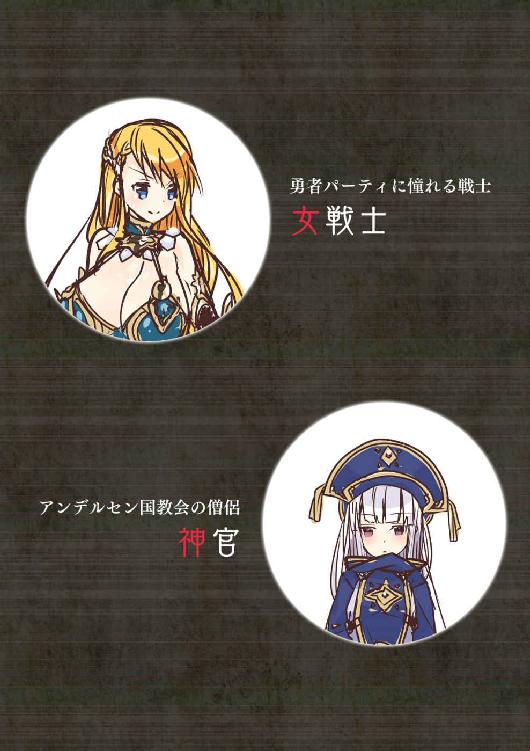
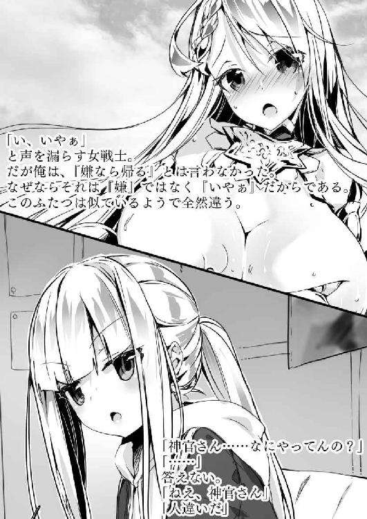
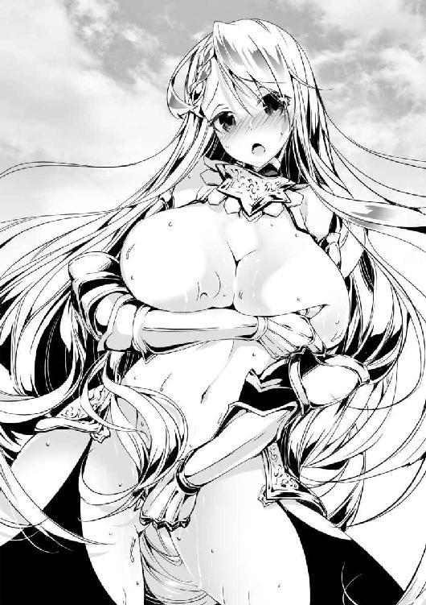
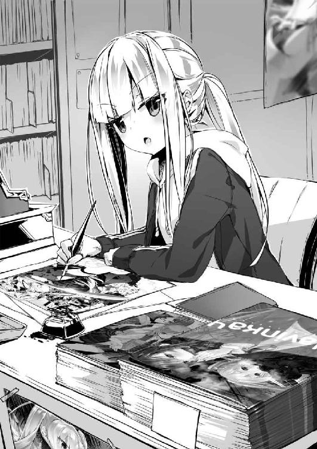
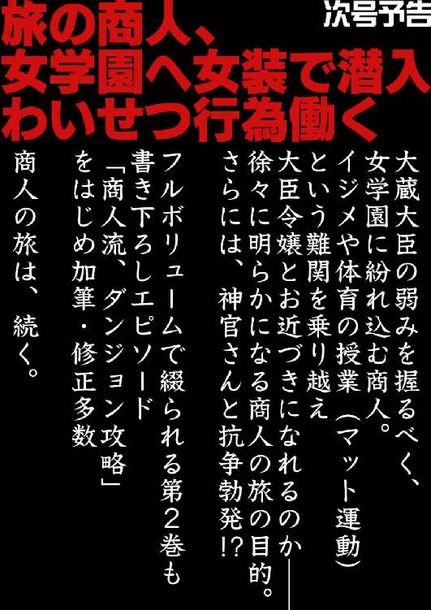

| 職業、商人(1)<職業、商人> (オシリス文庫) | |
| 黒おーじ | |
| (2015) | |
職業、商人（１）
著者／黒おーじ
イラスト／２１８
オシリス文庫
本作品の全部または一部を無断で複製、転載、配信、送信したり、ホームページ上に転載することを禁止します。また、本作品の内容を無断で改変、改ざん等を行うことも禁止します。
本作品購入時にご承諾いただいた規約により、有償・無償にかかわらず本作品を第三者に譲渡することはできません。
本作品を示すサムネイルなどのイメージ画像は、再ダウンロード時に予告なく変更される場合があります。
本作品は縦書きでレイアウトされています。
また、ご覧になるリーディングシステムにより、表示の差が認められることがあります。
本書の内容はフィクションであり、登場する団体・店名・人物などの名称はすべて架空のものです。


１年前、勇者が魔王を倒す旅に出たそうだ。そのため、最近では世界中が勇者の話題で持ちきりである。新聞は連日勇者の戦果を伝え、吟遊詩人は勇者の勇敢さを詠い、子供はこぞって勇者ごっこを始める。
その勇者が育ったことで噂の、アンデルセンの城下町。この国は近頃、人、モノ、金が急激に集まってきているらしい。そりゃあそうだ。勇者の魔王討伐だなんて巨大イベント、世間が見逃すはずがないのである。
まず、勇者の仲間になってパーティに加わりたい者が情報を求めてくる。また、そういう連中に武器や防具などの軍事物資を売ろうと商人が集まる。そうした流れを見越し、アンデルセンの政府は道路や橋などのインフラを再整備するし、ある程度の土地持ちはその土地を担保に宿やホテルをガンガン建てるから、資材が集まり、土地や債券金利はうなぎ登り。雇用も確保され、失業率は１％を切った。よって勇者の魔王打倒への旅立ち以降、アンデルセンは空前の好景気を謳歌していたのである。
さて、商人を職業とする旅人の俺にとって、こんな芳醇な市場を野放しにするわけにはいかない。
俺はいま、最近できたという話の新街道を利用してアンデルセンの城下町へ向かっているところだ。まだピカピカの石畳を馬車の車両がカラカラと心地よい音を立てている。
爽やかな秋風が頬を撫で、青い空に油絵の具のような雲。情景はまったく文句のつけようもないくらい気持ちのよい秋の日であるが、じつを言うと俺の心中は重たかった。というのも、このアンデルセンに向かうタイミングが商人としてはあまりに遅すぎたということを自覚していたからである。
こういった好景気につけ込んでよそ者が商売をしようとする時は、スピードが命である。早ければ早いほどよい。なぜなら、国や大富豪がもたらす大きな注文は好況初期に契約が埋まってしまうものだし、土地の転売などで儲けようとするにも底値近くで買えなければ美味しくないからだ。
では、もっと早く行けばよかったじゃないか、と思われるかもしれないが、事はそう簡単ではない。俺は旅の商人であるから、ダンジョンやイベントを攻略したりもする。その関係上、どうしても即座に向かうことができなかったのである。
苦虫を奥歯で噛み潰していると、『アンデルセンまで残り10キロ』という看板が立っているのが見えた。
やれやれ、ようやくここまで来た。あと少しだ。
できればそのまま到着まで止まらずに行きたかったのだが、下腹部にただならぬ尿意を感じていたので、ここらで一度用を足しておこうと思った。馬車を石畳の道から逸らし、路肩に停め、茂みに隠れてズボンを下ろし、放尿を開始する。
それがもう、出るわ出るわ。尿が止まる気配というものが感じられない。
そんな時だった。
「おい、おまえ。動くんじゃねえぞ」
背後から汚らしい格好をした男10人ほどがワラワラと湧き、各々が武器を手に取り俺を牽制している。
「悪いが、おまえの馬車は俺たちがもらっていくぜ。まあ、おとなしくしてれば命までは取らねえよ」
その中でリーダー格と思わしきスキンヘッドの男が、ドスを効かせた声でそう言った。
なるほど。人や金が集まるところにこういったならず者の盗賊も集まるのは道理だな。しかし、どうしたものか。まだ尿が止まる気配がないのだが......。
「あんたら、馬車をもらうと言ったが、一応あれには魔法でロックがしてある。俺じゃないと動かせねえんだぜ」
俺は一応そう言って様子を窺ったのだが、それは抵抗ととられたようだ。
「だから、おとなしくロックを外せと言ってんだ！ ナメてんのかコラ！」
横から、顔に無数の傷をこしらえた大男が苛ついたように大声を上げる。それに次いでスキンヘッドが続けた。
「なあ、このままだとおまえをめちゃくちゃに痛めつけなくちゃあならなくなる。俺は暴力はあまり好きなほうじゃないから、素直に従ってくれるとありがたいんだがな」
盗賊としてはコンビネーションの効いたよい脅しである。
「まあなんにせよ、ちょっと待ってはくれんか。せめてこいつが終わるまではよ」
俺が、勢いよく流れ続ける尿を指差してそう言うと、スキンヘッドは「まあいいだろう」と一歩下がった。そりゃあ、いくら盗賊が脅しても、生理現象まで止められるものではないからな。
「ちょっとあなたたち！」
唐突に、俺と盗賊たちが固まっている後方、つまり街道側から、大きな声が上がった。女の声だ。
その、場違いな声に驚き、首だけを反転させてみると、確かに女がそこに立っている。
まさに黄金色の長い髪に、宝石のように煌めく瞳、触れれば跳ね返ってきそうな白い肌。一言でいえば美しい女だったのだが、姿格好は戦士のそれだった。青の装甲で統一された防具は、魔法がかけられているのか、関節と急所だけを覆うものであり、肌の露出が甚だしく、彼女の重量あるおっぱいや、Ｓ曲線にくびれた腰周り、そして引き締まったお尻などが強調されているがゆえに、極めて扇情的だ。
「あなたたちが最近この街道付近に現われるという盗賊ね！」
彼女は身の丈ほどもある巨大な剣を構え、勇ましく問う。
「だったらなんだってんだ？」
女戦士の急な乱入に一瞬戸惑っていた盗賊たちであったが、スキンヘッドだけは即座に気を持ち直した様子だ。
「自首するというのであれば許してあげるけど、抵抗するなら切るわ」
一瞬、間があったが、次の瞬間、盗賊たちは一斉に爆笑した。
「ぎゃははは。冗談キツいぜ」
「姉ちゃん、ひょっとしてアレか？ お股が疼いて俺らに構ってほしいんか？」
「そりゃあいい。大歓迎、ウェルカムだぜコノヤロウ」
盗賊たちは口々に下品な言葉を投げかける。
「なあ、スキンヘッド」
「なんだこら......っておまえ、まだ小便終わってねえのか!?」
「まあまあ、俺の用足しのことよりさ。あんたら早いとこ逃げるか、自首するかしたほうがいいぜ」
「は？ なんでだよ」
「あの女が身に着けている鎧、あれは並大抵の奴じゃ使いこなせない。おまえらじゃかなわないよ。痛い目見る前に逃げたほうがいいって」
「おまえには関係ねえ。っていうか、おまえは盗られる側なんだから、本当に俺たちが倒されるんだったら黙って見ておけばいいじゃねえか」
「俺は親切心で言っているんだよ。ああいう正義を振りかざした輩は容赦なかったりするんだ。盗賊とはいえ、可哀想だからな」
「てめえ、あまり俺たちをナメるんじゃ......」
そのスキンヘッドの言葉に被せるように、盗賊たちの悲鳴が上がった。すると、この一瞬のあいだに半数の盗賊が女戦士の足の下に伏してしまっている。その大きく、重そうな剣を持ちながら、驚愕の早業だ。
「ほらみたことか」
俺は得意気にスキンヘッドを見る。
「うるせえ。おまえは小便してろ」
そう言うとスキンヘッドは俺への牽制を解き、女戦士の側を向いた。
「おい、おまえら！ 慌てるんじゃねえ。相手はひとりだ。バラバラに攻めずに、円形に取り囲め」
スキンヘッド以外の盗賊の残りが女戦士を囲み、ジリジリと距離を詰めていく。
「よし、いまだ」
号令とともに盗賊たちは一斉に攻撃を開始した。ある者は剣や槍で、ある者は炎の魔法で襲いかかる。さすがにこの多重攻撃に対応するのは困難であるように思われたが、女戦士は想像以上に素早い動きでそれらをかわし、次々と盗賊たちをなぎ倒していく。その姿は木の葉のようにつかみどころがなく、舞のように華麗だ。
しかし、取り囲んできた盗賊がすべて倒れると同時に、スキンヘッドが呪文を唱えると情勢は反転した。
「か、身体が動かない......」
女戦士は、まるで拘束されているように動かなくなったのである。
「そりゃあそうだ。チェインの魔法をかけたからな」
よく目を凝らすと、女の手首と足首が鎖のようなもので縛られているのがボンヤリと見える。魔法で鎖を具現化したのであろう。
「よくも部下たちをやってくれたな。さあて、どうやってかわいがってやろうか」
そう言うと、スキンヘッドは、女戦士の胸部の装甲に手をかけた。
「ちょっと、なにするのよ！」
動けない分、怒号を上げる女戦士であったが、スキンヘッドはそれに応じず、装甲を剥ぎ取る。すると、『ぷるん』と音を立てんばかりの弾力をもって、女戦士のおっぱいは丸出しになった。
「ほお、これはすごいな」
感嘆が上がるほど、そのおっぱいは重量、形、ともに申し分ないものであった。さらに、魔法の鎖によって両手がうしろに組まれているので、『はい、どうぞ』と言わんばかりに突き出ているのが、より美しい形を演出している。
「むむぅ、いい手触りだ」
そうやってスキンヘッドがおっぱいを揉みしだくと、女戦士は「くっ......」と言って顔を横に逸らし、羞恥に顔を歪める。
「おまえ、戦士なんてやってるのもったいねぇって。俺の女にしてやるよ」
スキンヘッドはそう言うと、女戦士の唇を奪うべく、彼女の顎をつかみ顔を近づけていった。
しかしだ。スキンヘッドの粗忽な唇が、女戦士の口元へ到達することはなかった。その前に、彼は膝から崩れ落ちるようにして女戦士の足元に倒れてしまったのである。光る頭はピクリともしないから、どうやら失神しているらしい。
「ふん。私は、自分より弱い男に唇を許したりなんかしないのよ」
術士が気を失ったので女戦士にかかっていたチェインも解けたようだ。そして、彼女はなにやら自分のおでこを痛そうに撫でている。
なるほど、そうか。頭突きだ。
チェインは、よほど魔法に熟達した者が唱えなければ、両手足を拘束するのみで頭部までその効力が及ぶことはない。女戦士は、スキンヘッドの顔が近づいた時に咄嗟の判断で唯一稼動可能な頭部による打撃を試み、そして成功させたのである。普通の奴は、チェインをかけられると焦って混乱状態に陥るものだが、この女戦士は相当に戦闘慣れをしているのだろう。
さて、ここでようやく小便が終わった俺は、おもむろにウォッシュの魔法で手を清め、その手で自らの頬を叩いて気合を入れた。なぜって、これから仕事をするからである。
俺は商人の顔を作り、女戦士のほうへ向かった。
「いやあ、強い！ びっくりしたよ」
まずは商人の必須科目、ヨイショからだ。
「そうかしら」
女戦士は先ほど外された胸当てを装着しながら、こちらを一瞥した。
「ああ。男性には決して真似できない美しい戦闘というものを拝ませてもらったね。神々しさすらあった」
一瞬、言いすぎたかなと後悔した。ヨイショというのは適切な案配が大切で、過剰な言葉は往々にして逆効果を生むからである。
「ま、まあね。私にかなう男なんて、勇者様くらいじゃないかしら」
俺の心配は杞憂だったようだ。めちゃくちゃ嬉しそうである。ニヤケたいのを我慢して、その豊かな頬をなんとか自我で抑えつけ、ちょっとだけモジモジしている様子が彼女の心情をありありと物語っている。
わかりやすい娘だなあ。
その後、俺は自分の名と身分を告げ、こう続けた。
「失礼ながらお聞きするけれども、貴女はアンデルセンの人間かい？」
「違うわ。私は武者修行中の身で、アンデルセンには３日前に来たばかりなの」
「なるほど、そうなると、やはり目的は勇者の情報かな？」
「もちろんそうよ！」
女戦士は『勇者』と聞くと同時に目を爛々と輝かせた。
「私、勇者様のパーティに加わえてもらって、一緒に魔王を倒したいの」
「そ、そうかい」
あまりの勢いにたじろぐ俺。
「世界に平和をもたらすお手伝いがしたい。そのために厳しい修行にも耐えてきたわ」
「それは随分と志のお高いことだね」
「そしてゆくゆくは勇者様のお嫁さんに......」
前言撤回。随分と俗っぽい動機だ。口には出さないけど。
「しかし、残念ながらいまのままでは、勇者のパーティに加わっても足を引っぱるだけだと思うぜ」
俺はここであえて挑発的な言葉を選んだ。持ち上げてばかりでは商売にならないからだ。
すると、女戦士はつとに俺の首を絞め上げた。
「どうしてよ！」
「く、苦しい」
「あら、ごめんなさい。つい興奮しちゃって」
やれやれ、怒られるかとは思っていたが、首を絞められるとは思わなかったぜ。
「貴女は確かに強い。身のこなしは言うまでもなく、魔法で防護されたその青い装甲の扱いも上手く、めったなことでは他人に遅れをとることはないだろうさ」
「じゃあなんで？」
よし、食いついてきた。
「その剣だ。貴女の装備で、武器だけがかなり見劣りする。質量で物理的な威力をカバーしているようだけれど、造りは粗暴で切れ味が悪いんじゃないか？ こんな剣では勇者の元へたどり着いても信用されないだろう」
「確かにそうだけれど、私、この剣しか持ってない......」
肩を落として消沈する女戦士。
ここが攻めどころだ。
「しかし、気に病む必要はないぜ。ちょうど仕入れたばかりので貴女にぴったりのものがあるんだ」
俺はそう言うと、走って馬車に行き、武器を１本取り出した。
「青龍刀ね」
女戦士はつぶやく。
「ああ、しかしただの青龍刀じゃない。ちょっと振るってみるがいいさ」
「いいの？」
女戦士は喜々として青龍刀の柄を手にし、尋常ではない速さでそれを振るった。刀身のうなりとともに引き裂かれる空気の音が彼女の高い力量を示している。
「これ、軽い......」
「だろ？ これにはストレスフリーの魔法がかかっていて──」
俺が商品について懸命に説明していくと、彼女はますます気に入った様子で青龍刀を眺める。長い柄部分の確かな丈夫さを握り確かめ、先端の刃へは日光を照らしその鋭利さに感嘆する女戦士。
「まあ、多少値段は張るけれど、それだけの価値は間違いなくあると思うぜ」
「値段が張るというと、どのくらいなのかしら？」
「名刀にしちゃあそこまででもない。アンデルセンの通貨だと、ほんの７００万ボンドだ」
「そんな大金無理よ！ 軍艦が１隻買えるじゃない」
悲鳴を上げる女戦士。
「値は良心的だって。貴女ほどのレベルの戦士に見合う武具であれば、このくらいは当然するぞ。その証拠に貴女の青い鎧、それはもっと高いはずだ。下手すりゃ小規模な艦隊が組める」
「え、これそんなにするの？」
なんだそりゃ。買ったのではないということだろうか。
「まあ、お金がないっていうならローンを組んでやってもいいが」
「本当に？」
「ああ、だけどその鎧は担保な。抵当権は貰うぞ」
「たんぽ？ ていとうけん？」
ああ、面倒くせえ。
「つまり、貴女がちゃんとお金を返せなくなった時には、その鎧は貰いますよってことだ。保証のようなもんさ」
「なんだ、そういうことね。わかった、いいわよ」
この娘、大丈夫だろうか。世間は俺のように正直な商売人ばかりじゃないよ？
まあなにはともあれ、よい品を強い戦士が買ってくれるのだから、商人冥利に尽きる。
俺は鎧の抵当権を得るために女戦士の肘の部分の装甲に触れ、リードの魔法を唱えた。リードは商品の情報を読み込む魔法で、商人の必須魔法だ。
しかし、情報を見た俺は顔をしかめることになる。
「なあ貴女さ、借金してんのか？」
「え、してないけど」
「でもこれ、すでに第一抵当権がついているんだけど」
そう、これではもしこの女戦士が破産しても、第一抵当権を持った人間が邪魔で鎧を回収することができないのだ。
「え、じゃあ前の持ち主がそうしたのかしら」
まあ、誰の借金だろうが、これではローンを組んでやれないことに変わりはない。
「残念だが、この話はなかったことに」
俺はそう言って青龍刀を取り上げようとするのだが、女戦士は離さない。
「嫌」
「子供みたいな駄々こねるもんじゃねえ。貴女いくつだよ」
「18よ」
むう、子供と言えなくもないか。やたらとグラマラスな体型をしているから、もう少し上かと思っていたがなあ。とはいえ、武者修行の旅に出ているくらいなのだから、それなりの分別はつけておいてもらいたいものである。
ため息をつく俺。
「で、どうする気さ？」
「え？」
「貴女はいまお金もない、担保もない、でも青龍刀は離したくないと言っているわけだが、俺から商品を強奪したいのか？」
「そういうつもりじゃ」
「そういうつもりじゃないと言うのか？ しかし、このまま商品を持ち去ったならば、ここに転がっている盗賊たちとどこが違うというんだ。とてもじゃないが誇り高き戦士とは呼べないな」
「そんな......」
女戦士はその大きな瞳に涙を溜めた。エメラルドグリーンの薄い色彩の瞳が潤むと、まるで南の国の澄んだ海のようでとても見栄えがする。
もちろん俺だってこんな責めるようなことは言いたくはない。
しかし、この青龍刀にはアンチシーフの魔法がかけてあり、決済を済まさずに俺から一定距離遠ざかると、ブザーが鳴り最寄りの国の警察が動く。この女戦士なら警察を相手にしても平気かもしれないが、お尋ね者の身に成り下がるのは可哀想ではないか。
「わかったわ」
「そうか」
俺はホッとひと息つく。これでやっと解放されてアンデルセンへ行ける。
しかし、それは甘い考えだったようだ。
「決闘をしましょう」
？
「誰と、誰が？」
「もちろん、私とあなたがよ。決闘をして、私が勝ったらこの青龍刀をいただくというのであれば、戦士らしくていいでしょう？」
「全然よくない。俺が勝っても得るものがないだろ。それじゃまるで不平等条約だ」
「あなたが勝った場合も得るものはあるわ」
そう言うと、女戦士は鎧の胸当て部分の装甲をポンと叩く。
「その鎧は駄目だって。抵当権を抑えられているんじゃ売り物にならんのだよ」
「そうじゃなくて」
そこで俺はようやく彼女が極めて恥ずかしそうに頬を朱に染め、唇を固く結んでいることに気がつく。
「まさかとは思うが......」
「ええ、私の身体を懸けるわ」
女戦士はそう言うと、俺の左腕に絡みつくように抱きついてきた。
「私は戦士だから筋肉の締まりもいいし、結構おっぱいも大きいと思うの」
はい、大きいです。俺の肘関節にちょうどその大きいおっぱいが押しつけられているからよくわかるさ。
「もちろん、私は自分が負けるだなんて思わないけれど、一応決闘なのだから、条件は平等にしなくちゃね」
女戦士の金色の髪からシャンプーの香りが漂い、息使いまでが伝わってくる。なにより、10代特有の攻撃的なまでにキメの細かいスベスベとした素肌が俺の左腕に絡みついてきやがる。俺の意識は次第に下半身の熱に侵されていった。
しかし、その時だ。俺は師匠である父親の言葉を思い出した。
『商人は商品に対する情熱を持ちながら、常に冷静であれ』
そうだ、冷静に考えれば、女戦士がいかに珠玉の美女であるとはいっても、７００万ポンドと釣り合うはずはない。ここは毅然としてノーと言うべきだ。
「決闘、してくれる？」
「ああ！ しよう。決闘」
あれ？ おかしいな。
そういうわけで、俺は女戦士と決闘をすることとなった。俺の超高級武具と彼女自身の肉体を懸けて......。
俺は、頭を抱えて馬車の荷台の上に座っていた。
「じゃあ私は、この盗賊たちをアンデルセン警察に引き渡してくるから。そうね、あそこの丘のてっぺんに、大きな銀杏の木が立っているのが見えるでしょう？ そこで２時間後に待ち合わせね」
そう言って女戦士が去ったのがいまから１時間ほど前。
ロマンティックなデートの待ち合わせ文句のように聞こえるかもしれないが、実情は全然違う。むしろ逆で、決闘の待ち合わせなのだから無骨なことこの上ない。
「まいったなあ」
ポツリとつぶやく俺。
ちなみに、すっぽかすという選択肢はほぼ不可能である。
人間同士が決闘を行なう際は、『決闘申請書』という書類を、決闘地の領土を統治している国家の役所に提出するのが国際常識だ。決闘申請書には、双方の捺印またはサインと、決闘に伴なう条件を克明に記入しなければならないのだが、それは先ほどやってしまい、女戦士がついでに当局へ提出する段取りになっている。
なぜそんなものに捺印したかといえば、自分でもわからないというのが正直なところではある。ひとつ言えるのは、『駄目だ、損だ、割に合わない、怖い』という頭による冷静な判断を、女戦士のムッチムチな身体を前に下腹部周辺からほとばしる熱い情欲的ななにかによって支配されてしまった、ということだけである。
しかしまあ、後悔先に立たずだ。いつまでも頭を抱えていたって気が滅入ってしょうがないから、俺は馬車にロックの魔法をかけ、林中に入っていった。まだ１時間ほど時間に余裕があったから、水場が見つかればいいなと思ったのだ。４～５分行くと、水の流れる音がかすかに聞こえ、林が開けると流れの緩やかな小川が現われた。
俺は小川の縁にある岩へ腰かけ、折り畳み式の釣り竿を取り出して、糸だけを垂らす。針がついていないから魚は釣れないのだが、戦闘の前に気持ちを落ち着けたり策を練ったりするには、このスタイルがもっともよいのである。
あの女戦士は確かに強い。だが、俺とて伊達に幼少の頃から旅の商人として世界を股にかけてきたわけではないのだ。過酷なダンジョンにてモンスターとの戦闘を余儀なくされることもあれば、人間との決闘も初めてのことではない。
それに彼女には弱点もある。スキンヘッドとの戦いでも見られるように、魔法に弱いことである。
向こうは絶対に勝てるという自信があるからこそ自らの貞操まで懸けているのだろうが、少なくとも10回やって10回負けるということはないはずだ。
ただ、心配事はほかにもあった。それは、『俺は女の子に暴力を振るえるのか？』ということである。
いや、俺はべつにフェミニストを気取るつもりはない。決闘なのだから加減無用という理屈もわかる。しかし、俺は師匠である父親に『男の子は女の子を殴っちゃいかん』とキツくキツく教育されていたので、生理的に手を出せないのではないか、という懸念がどうしてもつきまとってしまうのだ。
さあ、そろそろ時間だ。俺は馬車から青龍刀を持ち出し、それを武器として使うことに決めた。
女戦士からすれば自分があとでいただくことになるはずの武器に渾身の打撃を打ち下ろすのは躊躇われるはずである、という消極的な理由からのチョイスであったが意外に有効なのではないかとも思う。
約束の丘へ向かうと、銀杏の木の下にはすでに女戦士が立っていた。傾きかけの日が黄金色の葉に射し、美しい彼女の姿を飾っている。
「待たせたか？」
「うんん、全然。いま来たところよ」
ううむ、なんか上機嫌だな。
いぶかしく思いながら女戦士のうしろ側に視線を移すと、もうひとり女の姿があるのに気づく。木の陰に寄りかかっていたから気づかなかったのだ。
その女はメシア教の神官服を着ていて、銀色のサラサラな髪がそれによく映えていた。整った顔をした美人ではあるのだが、少し釣った目からキツい印象を受ける上に、そっけない表情で愛想がない。
「おい、彼女誰だよ」
俺は女戦士に耳打ちして尋ねる。
「公証見届け人よ」
メシア教圏の国々には、神職の人間が折々に『唯一神の名の下に見届ける』という複雑怪奇な行為をする風習がある。とはいえ、これもなかなか侮れない制度であり、たとえば俺が今日決闘に負け、青龍刀を渡すという約束を反故にしたらならば、僧侶が１００人単位でやってきて、唯一神の名の下に俺はボコボコにされるのだ。しかも、アンデルセン国教会の僧侶というのがこれまた精鋭揃いなのである。
そうか、つまり女戦士は、約束を反故にされる可能性を考慮して、この神官さんを連れてきたわけだ。そして、これでもう青龍刀は自分のものになると確信して、こんなに機嫌がよいのである。
まったくなめられたものだ。
「それでは決闘申請書の確認をさせていただく」
神官さんが初めて口を開いた。さすがに厳かな感じの声だ。
「ああ、よろしく頼むよ」
俺がそう応えると、決闘申請書の内容を読み上げる神官さん。
「以上だが相違ないか？」
「はい」
笑顔でそう答える女戦士に対して、神官さんの眼光は鋭く、目にかかる銀髪の前髪の向こうからこちらを睨んでいるようにも見える。
俺は再び女戦士に向かって耳打ちをした。
「なあ、あの神官さん、怒ってないか？」
「そう？ でも怒ってたとしても仕方ないわよ。メシア教の教義からすれば不健全極まりないもの」
なるほど。そりゃあそうか。あとで怒られなきゃいいけど......。
「それでは、構えなさい」
神官さんがそう言うので、俺は青龍刀を構えて女戦士に対峙する。集中力を高め、彼女のスピードについていけるようにしなければいけない。
しかし、その集中力はぶつ切りにされることとなった。
「ちょっと待って！」
女戦士がつとにそう叫んだのである。
「どうしたのだ？」
神官さんは眉をしかめる。
「私、その青龍刀が使いたい」
「は？」
「せっかくだから試し切り......じゃなくて、試しに実戦で使ってみたいのよ」
はい、試し切りって言ったね。この女、俺を切る気だよ。そりゃあ決闘で人を殺しても罪にはならないけどさ。
しかし、これはチャンスだ。交渉ならばそれは商人のフィールドだから。
「まあ、貸してやらないこともないけどな、条件がある」
「条件？」
「ああ、青龍刀は貸す。しかし、俺は貴女に攻撃しない」
「どういうこと？」
「つまりは、そうだな......30分だ。30分貴女の攻撃をかわし続けたら俺の勝ちということにしてくれ」
「女は攻撃できないってこと？」
「そうじゃない。単に自分の攻撃力に自信がないだけさ」
女戦士は少し考えたあとに了承した。
「それでは決闘申請書も変更しておいたので、始めなさい」
神官さんがそう言うと、すぐに攻めかかってくる女戦士。やはり武の才に満ちあふれていて、青龍刀の間合いの広さを充分に活かし、俺の心臓を正確に突いてくる。しかし、俺も心臓を貫かれるわけにはいかないから、身体をひねって避ける。Ｙシャツの布に青龍刀の刃がわずかにかすった。
「なかなかやるじゃない。けど、30分なんて絶対無理ね」
女戦士はそう言って身を翻すと、今度はその切っ先をもって足元を払う。ボケッとしていたら足首より下がなくなっていただろう。しかし、俺はジャンプしてこれもなんとか間一髪でかわした。
もっとも、そのせいで俺の身体のバランスは崩れている。女戦士はこれを好機と見てかすぐさま切っ先を返し、胴を薙ぎにかかってきた。すさまじく鋭い連続攻撃だ。これは飛んでかわすことはできない。だが、刃が腹を真っぷたつに割ろうかという時に、俺はバランスの崩れていた身体をさらに崩し、あえて地面に伏した。刃は頭の上を通りすぎてゆく。
さすがの女戦士も、３連続の薙ぎを即席で放つことはできないようだったが、代わりに地面に伏している俺へ向かって蹴りを放った。並みの蹴りではない。彼女の鍛え上げられたムチムチなモモから放たれる猛烈な蹴りである。もし当たったら致命傷に違いない。
しかし、地に伏している俺は、不格好ながらうしろ回りにでんぐり返しをして蹴りから逃れる。同時に距離ができたので再び起き上がることができた。
「くっ、なんで当たらないのよ！」
次第に苛立ちを見せる女戦士。今度は乱れ突きを放ってきたが、これには精度がなかった。要するに攻撃が雑になってきたのである。ひと突きひと突きにキレもなく、踏み込みも浅い。俺はただ単に余裕をもって距離をとればよかった。
そして、
「無駄だよ。俺には貴女の攻撃が見えているのさ」
などと挑発的なセリフをあえて言ってみる。
すると女戦士は歯軋りをして、その鞭のごとくしなやかな腕をわななかせた。頭に血を上らせて、冷静さを失っているのがありありと見てとれる。
そりゃあ俺のような弱そうな男にこんなふうにナメた口をきかれたら腹も立つだろう。
「ぅううー、やああああ！ たぁ！」
彼女は幾度となく勇ましく吼え、槍を突き立て、突っ込んできた。でもそんなものは、もはや闘牛士に操られた闘牛のようなものである。これでは臨機応変、胡蝶乱舞、紫電一閃な彼女の高い戦闘能力はほとんど発揮されない。俺は闘牛士の気分で、雑な攻撃をいなしてゆけばいい。
さて、そのような様に成り果てては、10分経っても、20分経っても、攻撃が当たるはずもなかった。そして、とうとう取り決めの30分が経過したのである。
「そんな......なんで」
「そりゃ貴女、あんなメチャクチャな攻撃じゃ当たるものも当たらないよ」
「くっ、確かに私は冷静さを失っていたかもしれない。それでも、あなたみたいな弱そうな男にすべての攻撃を防がれるほどヤワな鍛え方をしていたわけではないわ」
ひどい言いようだなあ。でも一理ある。戦闘も終わったことだし種明かしをしてやろう。
「貴女、武器は国産が好まれる理由を知っているか？」
「なにそれ」
だろうな。
「たとえば、Ａ国がＢ国に武器を輸出したとする。だが、これではもしＡ国とＢ国が戦争になった場合、Ａ国は墓穴を掘ることになりかねない。自分らが売った武器で自分らが傷つけられるという話になってしまうからな。だから、Ａ国がＢ国に輸出する武器にはかならず細工をするんだ」
女戦士は頭にハテナマークを浮かべているが、最後まで言わねば格好がつかないから俺は続けた。
「その細工とはＡ国への攻撃を無力化する細工さ。具体的に言えば、Ａ国がＢ国に大砲を輸出したあと、戦争になったとする。するとＡ国は、Ｂ国の弾を迎撃しなくちゃいけないよな。でも、あらかじめその大砲による弾の軌道がＡ国からはわかるように魔法で細工してあれば、なにも問題はない。だって、軌道さえわかればすべて打ち落とすことができるだろ」
俺は結論を言う前に、煙草に火をつけた。
「青龍刀の場合も似たようなもんだ。俺は旅の商人だから、道すがら屈強な戦士や武芸者に武器を売ることもある。でも、そんな連中の中には、武器を売った途端、金が惜しくなってその武器でそのまま襲いかかってくる不届きなヤツもいるわけだ。だから俺も、自分が持っている武器には魔法でそういう細工を施している。つまり、その武器による攻撃の軌道が一瞬先にわかるようにね。要するに、俺の目からは、相手の攻撃の像が実際よりも早く映るという寸法さ。だから、『俺には貴女の攻撃が見えている』というのはなにも冗談で言ったのではないのだぜ」
ここまで言って、ようやく少し理解したのか女戦士は食ってかかってきた。
「そんなのインチキじゃない！」
「人聞きが悪いこと言うなよ。これも商人の戦い方だ」
俺と女戦士は言い合いになった。ヤンヤヤンヤと醜く罵り合う。
そんなふうに収拾がつかないといった雰囲気の中、神官さんがひとつコホンと咳払いをした。
「どうでもよいが、決闘申請書の内容はさっさと執行してもらわなければ、私が帰れないのだが」
「あ......」
神官さんが指し示す決闘申請書の紙面を見て、俺と女戦士は同時に声を漏らす。女戦士が決闘に負けた場合は俺に貞操を差し出さねばならなかったのであった......。
「こんな勝負は無効よ！」
女戦士は納得できない、といったように叫ぶ。
「そういうわけにはいかない」
そう反論したのは俺ではなく、神官さんだった。
「おまえたちは決闘申請書を提出し、その条件の下で決闘を行なった。そして、それは私が唯一神の名の下において見届けたのだから、即座にその内容を執行してもらわなければアンデルセン国教会の威信に関わる」
俺は『アンデルセン国教会の威信』という単語に身震いした。数百人の僧侶が群れを成してやってくるのを思い浮かべたのである。
それは女戦士といえど同じだったようで、顔面は蒼白、かすかに震えている。
「そんな、嘘でしょう。嫌だ......」
俺は彼女のその様を見て少なからず傷ついた。そこまで俺が嫌なのか、と。
そういうわけで、俺は極めて矮小な男のプライドというやつをもってこう言った。
「貴女がそんなに嫌ならば、勘弁してやってもいいぞ。もともと貴女が言い出したことだし、俺だってそんなに嫌がっている女性を無理やりにしても楽しくないからな」
「本当？」
女戦士は、みるみる梅雨明けの空のように晴れ晴れとした笑顔になる。
「ああ、よかった。あなたのようなミジンコ並みの戦闘力の男に身体を好き勝手されるのなんて、本当は死んでも嫌だったのよ。あなたったら弱いけれど、紳士よねえ。うふふ、ありがとう」
なんとも人を馬鹿にした『ありがとう』である。
俺が海溝より深い後悔と猿のような猛反省をしたことは言うまでもない。
嗚呼、いくらなんでも格好のつけすぎだ。相手が嫌がっていようが──いや、嫌がっているからこそ、ここは役得と断じて実行すべきだろう。こうなると女戦士の丸出しの太ももがやけに遠くまぶしいものに感じられてくるから不思議なことである。己のちっぽけな誇りが恨めしい。
しかし、事はそんなにすんなりとはいかなかった。
「駄目だ。そんなのは許されんぞ」
俺は神官さんのその言葉に、虚を突かれる。
「決闘申請書を役所に提出しただけならばまだしも、メシア教が公証見届け人を請け負った内容はあくまで厳正に執行されねばならん。たとえ、本人がもういいと言っていようがな。そうでなければ、女、貴様は神の裁きに遭うぞ」
神の裁きとはもちろん、僧侶によるリンチのことである。この女戦士をリンチしようと思うならば、かなりの数の動員が必要かもしれないが、僧侶というのは『唯一神に逆らう者』に容赦がないから、このままだと彼女は貞操を失うどころの騒ぎではなく、死ぬよりひどい目に遭うだろう。
とはいえ、風向きが変わってきたので俺は内心歓喜した。
「せっかく本人がいいって言ってるのに......」
再び笑みの消えた女戦士は失意のコメントを述べるが、そもそも公証見届け人を連れてきたのは彼女である。完全に墓穴を掘った格好だ。
「で、どうするんだ？」
俺は問う。
「わ、わかったわ......好きにしなさいよ」
観念した、というように顔を逸らす女戦士。
ヒャッハー、美少女とエッチができるぜ、と鼓動が爆発するように高鳴るが、先ほどのミジンコ差別発言の手間、この状況でガッついてやるほど俺はお人好しではない。
「いや、べつに俺はそこまで乗り気じゃないんだけど。さっきも言ったけれど、そんな嫌々な感じじゃやる気なくすって」
女戦士と神官さんは、驚嘆の表情を俺に向ける。
「あなた、聞いてなかったの？ このままでは神の裁き──僧侶が群れを成して襲ってくるのよ」
「神の裁きが下るのは俺じゃない。貴女だけさ。神官さん、そうだろう？」
「そのとおりだ」
神官さんは深くうなずく。
「俺としては貴女がどうなろうと他人事。知ったことではないのだよ。だがまあ、貴女が、どぉーしても俺とエッチがしたくてしたくてたまらないというのであれば、仕方がないからお相手してやってもいいかな」
女戦士にみるみる怒気が増していくのが肉眼でわかる。
怖え。
しかし、恫喝で主張を曲げては商人失格だ。
「神官さん。こういう時には彼女、それ相応の態度というものが必要だと思うのだけど。どうかな？」
とはいえ、やっぱり怖いので神官さんに話を振る。彼女は早く帰りたいのだから、事を進めようとするだろうと考えたのだ。
「私は神職にある身なので、公証見届け人としての役割以外での個別の案件に対して発言する立場にない」
くそ、融通が効かない──。
「だが、あくまで一般論を申すと、『お願い、抱いて』などといったおねだりをするのが適当であろう」
──こともなかった。
そんな研ぎたてのナイフみたいな表情をしているのに『お願い、抱いて』の部分だけ妙に色っぽく言いやがって。ちょっとドキッとしちゃったじゃねえか。
女戦士はそれを聞き、いきり立つ。
「そんなこと、言えるわけないでしょう！ 私を誰だと思って......」
「さあ、疲れたし、もう帰ろうかなあ」
そう言って立ち去ろうとする俺。
「ちょっと待って！ あ、あの。お、お願い......抱いて」
まあ、そう言わざるを得ないよな。
意に反した言葉を絞り出すように発する女戦士の表情は、この秋の季節のごとく哀愁に満ちており、誠に趣き深いことであった。
「やれやれ、そんなエッチなこと言って。貴女がそんな淫乱な人だったとは知らなかったなあ」
俺は、女の子への暴力にはかなりの抵抗があるが、イジメるのは大好きなのだ。
「まあ、仕方がないから、とりあえずチューとかしてみれば」
「え、私から？」
「なに、嫌なの？」
そう返すと、彼女は躊躇しながらも、俺に顔を近づける。身を岩のように固くして、長いまつ毛が小刻みに揺れるほどに目をキツく閉じる女戦士。
しかし、唇まで固くしているのはいただけない。俺は彼女を制止した。
「おいおい、力入りすぎだろ」
「しょうがないじゃない。初めてなのよ」
は？
「初めてっていうと、チューが？」
「そうよ」
「貴女いくつだっけ？」
「18と、さっきも言ったでしょう。私は自分より弱い男に唇を許したりはしないのよ」
それにも聞き覚えがある。
なるほど、いままで自分より強い男に会ったことがないから、当然ファーストキスもまだだと。でも、俺は明らかにこの女戦士より戦闘の実力は劣るから、結局彼女は自分より弱い男に初めての唇を奪われるわけだ。
悪いね、なんか。
「とりあえず、力抜きなよ」
俺はそう言うと女戦士にアンプロテインの魔法をかけた。
「なにこれ、力が、入らない」
アンプロテインとは、もともと戦闘において物理攻撃を主体とする敵の筋肉発揮率を低くするために開発されたものである。この魔法の開発者もまさかこんな使われ方をするとは思ってもみなかっただろう。
俺は女戦士に再びチューを促す。
すると今度はいい具合に力が抜けていて、目はかすかに開き、薄桃色の唇は本来の軟度を取り戻したようだった。
そして、女戦士の弾力と潤いに満ちあふれた唇が俺の唇にかすかに触れる。
その時だ。俺の脳裏には、祖国の春に咲く桜の花びらが浮かんだ。
擬態語で表現するならば『ふわふわ』である。
そう、美少女のチューはふわふわしているのである。
いまにも女戦士の唇にかぶりつきたい衝動に駆られたが、それをしてしまったら台無しだ。俺は女戦士がしたチューより、ほんの少しだけ強くチューを返した。すると、彼女はこの新触感への好奇心に抗えなくなったのか、俺のチューよりもさらに強くチューを返してくる。
「ん、くっ」
また、俺が彼女の上唇を両唇で挟むようにチューをすると、彼女は真似をして俺の下唇を挟むようにチューをする、といったように次第にチューは加熱していった。
「ん？ んんー」
俺が舌を入れると、女戦士は驚いたといったように呻きを上げるが、それも束の間であり、舌と舌は唾液を潤滑油にして絡まっていく。
しばらくののち、ちゅぽん、という音を立て唇が離れると、女戦士は顔を茜色に染めつつ目をとろけさせた。
女の子はチューでしおらしくなる、というのは俺の師匠である父親の格言であるが、まったく同意見だ。
その証拠にあれだけ気丈だった女戦士の表情は見る影もなく、まさに女の子といった様相を呈しているではないか。
しかし、このまま彼女にただ性感の喜びを与えていくというだけでは面白味に欠ける。
「なんかまだ乗り気にならないなあ」
女戦士は、それを聞いてとても悲しそうな顔をした。本気で傷ついているようだ。
これにはさすがに俺の心も痛んだ。だって本当のところは、俺は彼女とのチューにはとても興奮していたし、その彫刻のように美しい身体には魅了されっぱなしなのだから。
だけれど、仕方がないじゃないか。彼女が魅力的であれば魅力的であるほどますます意地悪をしたくなってしまうのだ。
「なあ、神官さん。男の子がこういったことに積極的になるために、女の子ができることってなにがあったろうか。一般論でいいからご意見を賜りたいね」
「私は神職にある身だから（以下略）。だが、あくまで一般論で申すと、『フェラチオ』などがそれに該当すると思われる」
また、この神官さんはなぜ『フェラチオ』の部分だけ色っぽい声色を使うのだろうか。だが、素晴らしい意見だ。
対して、女戦士は『ふぇらちおってなあに？』という顔をしているから、神官さんがなにやら耳打ちをする。すると、もともと赤かった彼女の顔はさらに朱を帯びる。
神官さん、フェラチオの説明をしたの？
そして例のごとく俺が「嫌ならべつにいい」と帰ろうとすると、女戦士は俺のシャツの裾を引っぱりうつむく。そして、おもむろに俺のズボンのベルトに手をかけた。所作は極めてぎこちないが、それはむしろそそるポイントでもある。こういうところがスムーズだとこなれた感じがするものだから。
さて、ズボンが脱げ、俺の禍々しくそそり立ったち×ちんは、女戦士の形の整った美しい顔の前に露わになる。
「え、こんなに大きなものなの？」
俺のち×ちんのサイズが本当に大きなほうなのかはわからないが、これを言われて嬉しくない男の子はいないだろう。
女戦士はち×ちんを前に、しばらく迷ったように視線をあちらこちらに移す。しかし、意を決したように顔を近づけ、ち×ちんに口をつけた。
「ちゅっちゅっ」
たぶんこの娘は、先ほどのチューの経験を下に、ち×ちんに挑んでいるのだろう。唇と舌の動きが、チューのそれである。
しかしそれが上手い具合に......そう、ふわふわだ。
ち×ちんが美少女の弾ける唇に触れ、ふわふわなのである。
さらに、それがとても一生懸命なのが彼女の吐息からひしひしと伝わってくるから、たまらない。
「唾をもっと垂らすといいぜ」
と言うと、俺のち×ちんは女戦士の10代特有の粘性の少ないサラサラとした唾液にまみれ、
「ち×ちんを口に含むんだ」
と言うと、女戦士はその小さな口を持って俺のち×ちんを懸命に頬張る。
滑らかで、温かな美少女の口の中は、桃源郷を思わせた。
女戦士はち×ちんを頬張りながら、こちらの様子を窺うようにその大きい目を向ける。彼女からすれば、俺にエッチな気分になってもらわないと、自らに命の危険以上のものが降りかかるので、俺の様子はどうしても気になるのだろう。
正直、もうたまらんのではあるが、俺はそういった様子を気合で抑え込み、『全然効いてないし退屈で仕方がない』といった表情を無理やりに作っていた。
「もういいよ」
つぶやくように言う俺。
ち×ちんから、ちゅるん、という音を立てて口を離した女戦士は、こちらを不安そうに見ていた。
「鎧が邪魔だね。胸と股の部分の装甲を外しなよ」
そう促すと、女戦士は一緒安堵の表情を浮かべるが、すぐさま裸体を晒さねばならないことに対し抵抗を感じる様子で目を伏せた。それでも、俺がなにも言わないでムスっとしていると、しめやかに装甲を外しだす。
ちなみに、彼女は額当てや籠手及び肘膝関節部分の装甲をも外そうしたので、「それは外さなくていい」と言った。着衣をすべて脱がないほうが扇情を煽る場合も時にはあるのだ。今日の場合は、ブーツも履いたままのほうが趣深いだろう。必要な部分以外は女戦士の姿でいてほしい。
真蒼に輝く装甲がカチャリと音を立てて地面に落ちると、女戦士は、恥ずかしそうに右手でおっぱいを、左手で女の子の大事な部分を隠した。

そういう恥じらいは嫌いじゃないけれど、俺は早くチェインをかけられていた時のように丸出しのおっぱいが見たかった。でも、ここで手をどけるように言うのは、スマートじゃない。もう少しよい方法がある。
「じゃあ俺のＹシャツも脱がせておくれ」
「あなたのＹシャツを、私が脱がすの？」
「ああ、さっきズボンは脱がせてくれただろう？ Ｙシャツも頼むよ」
女戦士は俺のシャツを前にして迷ったようにもじもじすると、女の子の大事な部分を隠していた右手をボタンへ伸ばした。そちらは股をぎゅっと閉じることによって隠したつもりになっているらしい。
しかし、女の子にとって男物のＹシャツのボタンを外すのは難しいのである。そもそも、片手で他人のボタンを外すのは難しいことだが、女物と男物のボタンは向きが違うから、さらに難易度は高い。ボタンに集中してくると、次第に左手でおっぱいを隠すことに意識がいかなくなるものだ。
一番下のボタンにたどり着いた時には、彼女はすっかり両手を使っており、最後にＹシャツを俺の袖から外す時には、その形の締まったおっぱいが俺の顔の前でぷるんぷるんと揺れていて感無量であった。
「ひゃっ」
そうやって女戦士が声を上げたのは、俺の舌が彼女のおっぱいの先端を捉えたからである。
彼女の乳首はおっぱい全体に反比例するように小さく、そして桜色だった。俺はガラス細工を扱うように丁寧にその繊細な乳首を舌でくるむ。
女戦士は最初はよくわからないといった様子だったけれど、次第に息は荒くなり、身をよじるようになった。柔らかった乳首はぷっくりと硬くなっていく。
これまで左乳首のみに食指を伸ばしていたのだが、しばらくすると俺は口を右乳首に移し、左乳首はいままでつけた唾液の滑らかさを利用して、右手をもって責めた。こうすることによって、立体的な性感となるのである。
「い、いやぁ」
と声を漏らす女戦士。
だが俺は、『嫌なら帰る』とは言わなかった。なぜならそれは『嫌』ではなく『いやぁ』だからである。このふたつは似ているようで全然違う。
荒かった息にも、
「んん、あ、あ」
という色が着き始めた。
さて、盛り上がってきたところであるが、ちょっとタイムだ。
「あの、神官さん」
「なんだ」
「近いよ」
ずっとツッコまなかったけれど、神官さんはフェラチオの時くらいからだんだんと食い入るように近づいてきていて、いまではもう息がかかるほど接近している。
「断じてそのようなことはない。気にせずさっさと執行するがよい」
いや、近いって。
まあ、気をとり直してエッチだ。
乳首をもって『感じる』ということを、女戦士の身体に覚えさせたあとは、耳、首筋、肩、背中、腰、といった順に舌を這わせていった。舌は触れるか、触れないかの状態で這わせるのが肝である。下に行けば下に行くほど敏感になっていく女戦士。
戦闘のあとだったから、ほのかに汗ばんでいるのと筋肉が張っているのが、いかにも健康的な若い女性といった感じだ。
そして、ついに女の子の大事なところにたどり着く。そのつつましやかな割れ目に指を添え、びらびらをどけると、蜜が潜んでいた。ありていに言うと、もうびっしょりなのである。
「貴女、本当はこんなにスケベな身体だったんだねえ」
「そんなこと......ない」
こともないことは、自分が一番わかっているだろうから、否定も弱々しい。
次に俺は、女戦士のクリトリスを宝石のように大事に大事に剥いた。そして、舌べらでまずは優しく、次第に押しつけるように責め立てる。すると、おしとやかだったクリトリスはぷくぷくと充血し、膨れ上がっていった。
「あ、んん。きゃっ。あん、あんん」
さすがに反応がすさまじい。身体をおもいっきり反らし、脚は少しガクガクいっている。
さあ、下地は完璧だ。やっとち×ちんを刺すことができる！
ちなみに、指は入れない。処女の膣内に、一番初めに入るものはち×ちんであるべきだからだ。
「神官さん！」
「なんだ！」
女戦士の股の前にある俺の顔から、もう数センチほどのところに迫ってきている神官さん。あまりに近すぎて、事故で唇が触れてしまいそうだ。
「こういう時に女の子が言うべきは、どんな台詞かな？ 一般論でいいから答えてくれ！」
「あくまで一般論だが、『あなたのおち×ちんを私のおま×こにぶち込んでほしいの』などがよいのではないか？」
「却下だ」
なにそれ。ふざけてんのか？ そんなの興ざめ甚だしい。
しかし、神官さんはものすごくショックだったらしく、鉄の表情は崩れ、いまにも泣き出しそうになってしまった。
まあ、いい。もう刺してしまおう。
俺は自分のＹシャツとズボンを地面に敷き、女戦士を横たえた。
「ほ、本当に？」
やはり、ち×ちんを刺すというのは処女にとって怖いものらしい。女戦士の目に怯えが浮かぶ。
「神官さん、ここでやめても神の裁きはあるんだよな？」
俺は、すっかりいじけて膝を抱えている神官さんに尋ねた。
「ああ」
力ない返事だったが、答えてくれた。
「わかった。お願い」
女戦士が、そうつぶやくから、俺は彼女の脚を広げた。魔法で力を抜いてあるから簡単だ。
「ちょっと、こんなに開くものなの？」
「開くものなんだよ。というか、きちんと開かないとすげー痛いよ？」
きちんと開いたって、処女なんだから痛いに決まっているだろうけど。
しかし、俺には秘技がある。完全に痛みなく、というのは無理だが、かなり軽減してやれるだろう。
俺はおもむろに目を閉じ、精神統一を図った。すると、俺のそそり立ったち×ちんは、ほのかに縮小していく。そして、挿入が可能な程度の芯の硬さは残しておきながら、中くらいの大きさになったち×ちんを女戦士の入り口にあてがう。
意外に知られてはいないが、ち×ちんはマックスの状態ではなく、いわゆる半立ちの状態でも、挿入は可能なのである。
「入れるぞ」
そう言ってゆっくり、本当にゆっくりと半立ちのち×ちんを入れていった。どのくらいゆっくりかといえば、根まで埋めるまで５分ほどかけるのだ。さすがにキツいが、ここでち×ちんをすぐに硬くしてしまっては台無しであるから、きちんとコントロールしなければならない。
「私の処女......勇者様にあげるつもりだったのに......」
やめろ、そういう興奮することを言うんじゃあない。大きくなってしまうだろう。
だがまあ、なんとか耐えたよ。
「痛くないか？」
「よくわかんない。痛い......かな？ ん、やっぱ痛いかも」
ほら、この程度で済むのである。
そのあと、すぐには動かさない。代わりにクリトリスをいじってやるのだ。すると女戦士は「ん、んん、あん」と感じながら腰を動かすから、ち×ちんと膣内がこすれる。すると、クリトリスの快感と中の痛みがごちゃごちゃになっているような様子で、だんだんと中のほうも馴染んできているのが、ち×ちんから読みとれる。
その段階に至って、俺はようやくち×ちんのコントロールの縛りを解き放ち、女戦士の中で大きくしていった。
「お、大きく......中で大きくなってる」
女戦士の中で肥大化させた俺のち×ちんが、彼女の中でうなりを上げた。
まだしばらく動かすべきではないと判断した俺は、両手を女戦士のピンピンに突っ立った両乳首へやる。
指を乳首の元で高速に上下させると、硬くなっている乳首はぷるぷると揺れて、彼女はその大きなおっぱい全体を突き出すように身体を仰け反らせた。
女戦士が乳首を感じるたびに、彼女の生温かい膣内は反射的にち×ちんをきゅっきゅと締めつける。
「なあ」
「んっ、あっ......な、なあに？」
「これで貴女はもう処女ではなくなってしまったのだねえ」
しみじみといったふうに意地の悪いことをのたまう俺。
「あ、そんな、いやだ」
女戦士は正気に戻ったというように目を見開くが、左乳首を責めていた右手をクリトリスにやると、再び色っぽい声を上げ始めるのであった。
さて、そろそろ大丈夫だろう。
俺は極めてゆっくりとだが前後運動を始めた。
しかしこれは──ち×ちんがとろけそうだ。
いや、じつはもう溶けてしまったのではないか？
一瞬、そんな錯覚を覚えるほどだった。
やばい、このままではイッてしまいそうだ。いやしかし、そんな情けないことになってたまるか。
身を固くして我慢する俺だが、やっぱりもう駄目かもしれない。
その時だ。
「おい、貴様」
いじけていた神官さんが、いつの間にか再びその冷たい瞳をこちらに向けていた。
「簡単にあきらめるんじゃあない。あきらめたらそこでお終いだぞ。最後まで、希望を捨てちゃあいかん」
「神官さん......」
そうだ、こんなところで終わるわけにはいかない。俺はとろとろな女戦士の中を、まだ味わいつくしていないではないか。
「うおおおお」
そうやって気合いを入れた俺は、なんとかち×ちんの奥から込み上げる波を収めることに成功したのであった。
一度初動の山を越えると結構余裕ができるもので、俺は段階的に腰の動きに熱を帯びさせていった。
もっとも、女戦士は紛れもなく処女で、まだ自分の意識と膣内の感覚とがバラバラな様子だ。女性の先天的な身体としてのひと襞ひと襞はそれ自体として俺のち×ちんを、ちゅるぬるっと健康的に挑発してくるけれど、この性器と性器の触れ合いを彼女はまだよくわかっていないのである。痛くはなさそうだが、その代わり気持ちよさそうでもない。
嗚呼、処女の中というのはじつに壮大で孤独な第一歩である。いわば朝のまっさらな雪景色にひとり足跡をつけるようなものだ。
まあ、それはそれで感動的なことではあるが、セックスはひとりで楽しむものではない。次第にこの屈強な女戦士をち×ちんで屈服させてやりたいという欲求がムクムクと起き上がってくるというもの。
俺は腰の動きに変化をつけ、ち×ちんを彼女の中のあらゆる壁にこすりつけるようにした。ただ、あまり激しすぎてはいけない。彼女に、自分の膣内の感覚をつかんでもらおうというだけなのだから。
「ほら、中でち×ちんがぶつかってるのわかる？」
「ん......え、ええ」
自分の腹の下をち×ちんが貫いている感覚──これが次第にわかってきたのか、女戦士は戸惑い含みで顔を背けて恥じらう。気の強い彼女のこんな表情を果たして世の誰が見たことがあろうか。
俺は、その背けた頬になにか悲しげなものを感じ、これを指でそっとこちらへ向け、唇を吸った。
ち×ちんが刺さっていても、チューは気持ちよさそうである。表情の恍惚からも、膣壁からにじみ出る愛液からもそれがわかる。また、舌を入れれば即座に舌を入れ返してくれるくらいには素直になっていて、それが俺の気をよくした。
そして、キスをしながら、ち×ちんを刺しながら、そのまま彼女の上半身を起こして座位に持ち込んだ。脚を下へ潜らせると、彼女の鍛え上げられたピチピチな太ももが俺のももに密着し、スベスベして気持ちいい。さらに抱き締めると、剥き身の乳房が俺の胸板でムニュリと潰れる。
俺は、まるで長年想い続けた恋人との初逢瀬のように女戦士を強く優しく抱き締めた。頭を二、三撫でると、美しい金髪から石鹸のような香りがそよりと漂う。
性器同士だけではなく、あたかも身体全体で女戦士とつながっているようだ。彼女もそう思ってくれていることを願う。
唇を離すと女戦士の白い頬は燃え、瞳は熱を帯びていた。俺を見る目つきが、女の、夫を見る目つきである。実際のところ俺は彼女の夫ではないし、恋人ですらない。しかし、そういう錯覚を起こすくらいには行為の雰囲気に没頭し始めたようだ。
俺はもうひとつ軽く彼女の唇にキスをしてから、ごろんと寝転がった。座位から俺だけが寝転がったので、必然、女戦士が俺のち×ちんの上に跨る格好となる。
彼女は戦士だから、もちろん馬も乗りこなすのだろう。それはきっと凛々しく、勇ましい佇まいに違いない。しかし、ち×ちんに跨る女戦士は随分としおらしい。初めてのことで、どう乗りこなしたらいいかわからないようだ。
仕方なく俺が下から突き上げるようにして突くと、
「あんっ、いゃん」
と可憐な声を上げる女戦士。
大きなおっぱいは青空の下に丸出しで、上下にぷるんぷるん揺れている。
まったく戦士の威容は形無しだ。
それからさまざまな体勢を試しながら、おおよそ小一時間ほど彼女の中に挿れっぱなしのち×ちん。
最後にうしろから突いてシメようと思い、銀杏の木に彼女の手をつかせた時には、すでに陽が落ちかけていた。女戦士の肉づきのよいお尻がこちらに突き出され、白銀のように艶やかな肌が夕日の朱に染まっているのが趣き深い。
「こんな格好......恥ずかしい」
そんな台詞を言ってくれるのならさらなり、である。
うしろから、というのは、ち×ちんが女の子の尾てい骨に当たって痛い。でも、そのお尻から背骨にかけるエロティックで美しいラインに男のロマンがあるのだ。
もう１時間近く腰を振り続けていたから疲労感が甚だしいけれど、俺はラストスパートをかけた。腰のギアをトップに入れると、彼女の身体は火照りに火照って、接合部はちゅくんちゅくんと音を立てる。
「きゃ、あ、あん、きゃん、きゃん」
もうなりふり構わず叫び続ける女戦士。こうなるとすでに動物の泣き声と変わらない。
そしてしばらくすると、女戦士は身体を頭から爪先までおもいっきり反らして、痙攣するように膣内を締めつけた。
「あ!! ......ぅー！！！」
一見苦しんでいるかのような悶え方だったが、イっているのである。
構わず続ける。
「や、やめて！ なんか、おかしいの。おかしく......あっ！」
再び反り返り、痙攣する。
どうやら連チャンするタイプらしい。
彼女の生まれて初めての絶頂に釣られて、俺ももはや限界である。
「く、そろそろイキそうだ。出すぜ」
俺がそう言うと、女戦士は怯えたように顔を振り向かせた。
「出すって、中に？ やめて、それはやめて！」
叫びながら暴れる女戦士だが、魔法がかかっているからたいした力ではない。俺は彼女の肩を抑えつける。
「で、出る！」
「嫌っ、いやあ......」
怒り狂ったように波打つ俺のち×ちんは、女戦士の中に勢いよく子種を放出した。
どぴゅっ、どぴゅ、どびゅん。
膣の中に熱い熱い液体が吸い込まれていく。約20回ほど波打ったち×ちんはそのたびに大量の子種を吐き出したから、俺はその最後の１滴までを余すことなく女戦士の中に注ぎ込んだ。
「あ、赤ちゃん、赤ちゃんができちゃうよう」
彼女はそう言って哀れっぽく涙ぐむ。
ち×ちんを抜くと、女戦士はお尻を突き出したまま生まれたての仔羊のように脚をガクガクさせて、大事な部分からはとろりとろりと乳白色の液体があふれ出す。
俺は俺で筋肉疲労的に満身創痍だったから、煙草を吸おうと自分のズボンをまさぐる。しかし、ズボンは女戦士の愛液でお漏らしをしたようにびしょびしょだったから、当然シガレットケースも湿気って、ふにゃふにゃになった煙草を吸うはめになった。
煙をくゆらせ空を見上げる。
陽はもう山ぎわまで沈んていて、紫の空色と銀色の三日月が俺を急激に冷やしていった。
「ねえ、神官さん」
「なんだ」
馬車を操る俺の横にちょこんと座っている神官さんに向かって話かける。『ついでにアンデルセンまで乗せていくよ』と言ったら素直に乗っかってきたのである。
「あの、『たとえ相手がもういいと言っても決闘申請書の内容は執行しなければならない』ってのは本当だったの？」
そう尋ねると神官さんは押し黙り、釣り目のあいだの眉間にシワを寄せた。頬にはツツツと冷汗が流れる。
「と、とと当然だろう。け、決して『エッチってどんなものなのかしら。生で見てみたいわ』などという好奇心から嘘をついたわけではないぞ！」
ご説明ありがとうございます。
やはりな。へんだとは思ったんだよ。両者の合意による契約の解消が許されない法など聞いたことがない。
「そうだよね。神官さんは神に仕えるありがたーいお人だもんね。嘘をついてあの女戦士の処女を無駄に喪失させるなんてこと、しないよね」
「も、もちろんだ」
「まあ、これもなにかの縁だしさ。近いうちに神官さんの教会に顔を出すよ。その際はいろいろと便宜を図ってくれると、お互い幸せだと思うのだけど。神官さんもそう思わない？」
俺はそう言ってニッコリとほほ笑む。
「わ、わかった......」
神官さんは声を絞り上げるようにしてそう答えた。
コトコトと、馬車は道を行く。そして、アンデルセンの城下町が目視できる距離までたどり着いた時、今度は神官さんから口を開いた。
「なあ、貴様。あの女戦士は放っておいてよかったのか？」
「と、言うと？」
「貴様はあの女戦士に一般的に言うところの『中出し』をしていただろう。もしかすると孕んでしまう女を放っておくというのは、あまりに非人道的なんじゃないか？」
なるほど。この女、自らの立場が悪くなったものだから、なんとか俺を責め立てて劣勢を立て直したいわけだな。しかし、こういう口での勝負を俺に挑もうというのが間違っている。
「女戦士は妊娠しないよ。避妊したからな」
「嘘をつけ。『生』だったじゃないか」
この人は本当に......『なま』という２文字だけでも声色を変える。律儀な神官さんだ。
「俺のほうがピルピルを飲んでいたんだよ」
「なんだそれは」
「ピルピルってのは要するに男性の子種を一時的に死滅させる魔薬さ。つまり、あの時の俺の子種は生殖機能のないただの白い液体だったってこと」
「じゃあなぜそれを言ってやらなかったんだ？ 言っていればあの女戦士も安心するし、最後に暴れることもなかったではないか」
「そんなの決まってるだろ」
俺は煙草に火をつけ、煙を吐き出しながら言った。
「嫌がっているところに中出しするほうが興奮するからさ」
「な、なるほど。そういうものか......」
納得しちゃったよ。歯ごたえないなあ。
「じゃあ私はここでよい」
神官さんは、そう言って馬車から降りる。
「まだ城壁外だけどいいの？」
「ちょっと壁外に用があってな。ご苦労だった」
アンデルセンは城下町だから、町を城壁で囲って全体の守りを固めているのだが、城壁内では土地が足りなくなってきたのだろう、外にもすでに町らしきものが作られている。これはアンデルセンが好況である確かな証拠だ。
しかし、神官さんが城壁外になんの用があるというのだろう。神官というものは町の中心部にある教会にデーンと構えているのがお仕事のはずだ。
神官さんの首根っこを捕まえておけば教会相手に発注を取れるかな、くらいに考えていたが、もっと脂っこい話が転がっているかもしれない。まあどちらにせよ、彼女に対して優位なパイプを築けたのは、この町での商売における僥倖といえるだろう。
「神官さーん！」
すでに結構遠くに行ってしまっている神官さんに、俺は大きな声で呼びかける。
すると声に気づいたようでこちらを振り返る神官さん。
「またねー！」
俺はそう言って手を振った。釘を刺したのである。
さて、いまをときめくアンデルセンの城下町の正門前。
この町で大きな利益を上げるためには海千山千の猛者どもを相手取らねばならぬだろう。
俺は身を引き締めて、門に向かった──。
勇者のあるアジトにて。
そのアジトは小洒落たログ・ハウスで、世界各地にて活動をする勇者の仲間たちのために設えられた拠点のひとつである。町からひとつ郊外の林中にあり、ロケーションもよい。中には暖炉があり、小型のバーカウンターさえある。ただ、さすがに勇者パーティのアジトだけあって、数々の武器や防具が雑多に積み上がってはいるので殺伐とした印象ではあるが。
さて、パーティのとある新人が、暖炉の前で居眠りをしていた時のことだ。
「新人。起きなさい！」
と、女の声がして、彼は飛び起きた。
「はあ。もう朝でしょうか」
新人がそんな寝ぼけたことを言うものだから、女のため息が聞こえてくる。
「まったくもう......」
この女は、勇者パーティの主力中の主力、聖騎士だ。
清く、正しく、美しくといった調子でまとめ上げられた金髪。乳房の姿に沿って型取られた真っ白な胸当て。そして勇壮なマント。いずれも清廉で精強な、均整の取れた佇まいである。
「どうもすみません」
「あなた、この勇者パーティに入ってどのくらいでしたか」
「えっと、２週間、いや、３週間とちょっと......」
「つまり新人でしょう。なのにそんな悠長にサボっててよいのですか」
「よくはないと思います」
「ならばなぜ眠っていたのですか」
「あの......することがなかったので」
「することがない、ということはありえないのですよ。勇者パーティの一員たるもの、常に勇者様のためにどう動けるかを考えて、自分から進んで行動しなくてはならないのです。くどくどくどくど......」
このように、新人はパーティに入ってからというもの、この聖騎士に叱られてばかりだった。そのたびに彼はシュンと萎縮して、頭を垂れるのである。
「それはそうと、私はこれから勇者様のご命令で、ある商人を探しにいかなくてはなりません。勇者様を含めほかのメンバーは遠征に出ていますし、私もここをしばらく空けることになるのですが......果たしてあなたのような新人に留守を任せてよいものでしょうか」
こんなふうに尋ねられたら、新人としては次のように答えるよりほかない。
「大丈夫です。やれます」
「そうですか。ならばあちらの遊び人さんとふたりで留守をお願いしますね」
聖騎士の視線の向こうには、小型バー・カウンターでグラスを傾けている50絡みのオヤジがいた。遊び人のオヤジはこちらをギロリと一瞥したが、遊び人らしい愛嬌はなく、頭はハゲかかっている。
新人は、相棒があまり強そうではないことに不安を感じたが、聖騎士の手前、強情を張って「はい」と大きな返事を返した。
「そうそう。それから、留守中に誰かが訪れても決してここが勇者パーティの拠点だということを明かしてはなりませんよ」
「はあ、なぜでしょう？」
「あなたは新人だから知らないでしょうけれど、以前一度、ある拠点が勇者パーティのものであると明かされてしまったことがあるのです。この時どうなったかわかりますか？」
「うーん、ええと。わかりません」
「記者や勇者ファンで連日あふれ返りました」
「へえ、すごいですね」
「ええ、すごいです。でも、その拠点は使いものにならなくなってしまった。いいですか。勇者様は勇者様であると同時に、もはや世界レベルの大スターなのです。その点を踏まえて留守もしっかり頼みますよ」
「は、はい！」
「よい返事ですね。ふふっ。私はいろいろあなたにうるさいことを言いますが、それはあなたに期待しているから言うのですよ。期待していなかったら初めからなにも言いません」
そう言って、聖騎士は新人の頬へ手をそっとあてがった。柔らかな指の感触と女性の香りに、新人はひとつクラリとする。
「では、頼みましたからね！」
聖騎士はマントと金髪をひらりとひるがえして、アジトを発っていった。外から彼女の愛馬たるペガサスが高貴ないななきを上げるのが聞こえた。
そんなこんなで、アジトに残された新人と遊び人。
新人はこのふたりっきりの沈黙に耐えきれず、むやみに口を開いた。
「あ、あの......」
「あん？」
「えっとですね。『遊び人』というのはいったいどういったご職業なのでしょうか」
「なんだ、いまの若えモンはそんなことも知らねえのかい」
「はあ。無教養でして、すみません」
「しょうがねえなあ。いいか？ 遊び人ってのはな、とどのつまり宴会やらなんやらのときに率先してその場を盛り上げる役回りのことよ」
「道化とか幇間ってことですか？」
「まあ、早い話そうだわな」
「そうですか」
新人は、相手が道化風情だと知りひとつ緊張を解いた。
「おっと新人。オレが遊び人だからといってあんまり軽蔑しちゃいかんぜ」
「いや、ボクは決してそんな......」
「道化とか幇間って役回りはな、こういう組織には絶対ひとりは必要なもんさ。世の中クソ真面目な連中ばかりじゃあ気が滅入っちまうからな」
「そういうものですか」
「そこへいくと、可哀想なのは新人。あんただよ」
遊び人の人差し指が自分をズケズケと指すので、新人は少しムカっとして立ち上がる。
「どういう意味ですか？」
「あんたはたしか、剣の腕を見込まれてパーティ入りしたんだろ」
「そうですけど」
「それにしちゃあ腕が中途半端だ。使いどころもねえし、先の見込みもねえだろう。それにいつもいつもあの聖騎士のねえちゃんにドヤされて、嫌気はささねえのかい？」
「それは、聖騎士様がボクに期待をかけてくれているから......」
「ははっ」
「な、なにがおかしい！」
新人はついに声を荒らげた。
「いやあ、すまない。ただな、あの聖騎士のおねえちゃんはみんなにそう言うんだよ。べつにあの娘が性悪ってんじゃない。ただ見かけによらず頭があまりよくないんだな。だから勇者様が部下を教育するセリフをそのまま真似て言っているだけなのさ」
「聖騎士様を侮辱するのはよせ！」
「む、そうかそうか。なるほど......」
遊び人のオヤジはグラスの氷をひとつ悲しげに鳴らして続けた。
「あんた、あの娘に惚れてるね」
「っ！ っっ......」
「可哀想になぁ」
「あ、憐れまないでください」
「これが憐れまずにいられるかい。あんた、この勇者パーティの中で何人が聖騎士のねえちゃんに惚れてると思ってる？ 本人は無自覚なんだろうが、ああいうクラス委員長タイプってのにコロっといっちまう男ってのは驚くほど多いんだぜ」
新人は『クラス委員長タイプ』という言葉の意味はわからなかったが、この遊び人のオヤジの言うことそのものはなんとはなしにわかる気がした。
「それにな。聖騎士ってのはそもそも法王庁で生涯のバージンを誓ってるんだ。あんたが考えているようなことはできねえんだよ」
「ボ、ボ、ボクはなにもそんなことは考えてないです！」
「そうなのか？」
「......いや」
あらためて問われてみると急に自信がなくなる新人。
「でも、ボクにだって聖騎士様が高嶺の花だってことくらいはわかってるんです」
「まあ、そらそうだわな」
遊び人は落ち込む新人の肩を叩いて、悟ったように二、三うなずく。
「あんた、そこまでわかっているなら、いっそのこと国へ帰ったらどうだい」
「はあ」
「あんたみたいなのがこんなパーティにいたってどうせろくなことはねえ。鉄砲玉にされるか、飼い殺しにされるのがオチさ。だったら国へ帰って、嫁さんでも貰ってよ、父ちゃん母ちゃんを安心させてやんなよ」
「でも、国に帰ってもどうせうだつは上がらないし、第一、路銀もないんです」
「そうか......わかった。よござんしょ」
そう言って遊び人はなにやらバーカウンターのうしろをゴソゴソとやりだした。そして汚い小さい袋を取り出したかと思うと、机にそれを広げる。ジャラっと音を立てて光を放つそれは......ボンド金貨である。
「これだけありゃあ帰って商売でもやるか畑でも買うかして、暮らしも立つだろう」
「そりゃあ、まあ」
「これをあんたにやるよ」
新人は彼の突飛な申し出に驚き狼狽した。
「いやいや、遊び人さんからそのようなものを貰う義理はありません」
「水くせぇこと言うなぃ。どうせ遊んで消えるアブクゼニさ」
「どういうことですか？」
「ん、んん。まあな......オレのような飲む、打つ、買うの三拍子揃った遊び人は、常に遊ぶ金の工面には事欠かねえってことだ。あんた、さっき聖騎士のねえちゃんが言っていたのを聞いたろ。『ある商人を探しにいく』ってよ」
「ええ」
「この勇者パーティの欠陥はまさにそこさ。いろいろと強い連中は揃っちゃいるが、台所事情を考える役回り──つまり商人がいねえ。だからある武器は足りないのに、ある武器は過剰で余っちまったりする。これだけ戦利品がたくさんあるのにしばしば金策に不都合が出るのはそういうわけだ」
新人は、アジトのスペースの大きな部分を占める武具の山を見て、得心した。
「たとえば、これなんか見てみろよ」
「はあ、すごい鎧ですね」
遊び人は、目の覚めるような青の装甲で彩られた、美しいビキニアーマーを指差す。
「こんなもの、パーティの誰が身に着けるってんだ。ウチには女の戦士なんていねえ。モノはいいから男の戦士や剣士が身に着けても防御は高まるだろうが、ムキムキのマッチョマンが装備してみせたらタダの変態だろ？ 気の利いた商人がいればこんなものはさっさと売っちまって、別の装備品や遠征費の足しにするもんだ」
「なるほど。この勇者パーティにもそんな深刻な問題があったんですね」
「だが、それがオレにとっちゃ都合がイイ」
遊び人のオヤジは、グラスにウィスキーを注ぎながら得意げに言った。
「この金はな、そのビキニアーマーを担保に引っぱってきた金なのさ」
「質に入れたってことですか？」
「質に入れちまったら、モノがここにあるはずはないだろ。モノがなくなりゃさすがに怪しむヤツも出るだろうから、銀行へ行って抵当をつけるのさ。これだけ上等な装備なら動産でもそれなりの金が引っぱれる。もちろん、名義は『勇者パーティ』でな。人間不思議なもので、預金残高が減るのは気にかけるが、当座の借入残高の増えるのは気がつかないもんだ。それも帳簿さえつけていりゃあ一目瞭然なんだが、そんな気の利いたもんをつけてるヤツはこのパーティにはいない。みなどんぶり勘定でやっちまってる。さっきも言ったが、パーティに商人がいないからな」
新人には話の半分も理解できなかったが、遊び人の遊ぶ金の工面というものの執念にだけは舌を巻いた。これだけできるのであれば、台所としての役割もこの男が担えるのではないかとも思うが、それはきっと遊び人のあり方としては違うのであろう。遊び人の本分は、遊ぶ金欲しさのネコババというところにあるのだから。
「ネコババの金だからって、なにも気に病む必要はねえぜ。勇者パーティの資金は総合的に見れば潤沢なんだ。この程度の金、退職金代わりに貰っていってもバチはあたらねえだろ」
「そうかもしれません、ね」
それでも新人には、勇者パーティを抜けることについての心残りがあった。
「でも、ボクはまだ自分の剣がどこまで通用するのか、充分に試していません。このままなにもせず国へ帰ってしまったら、きっと一生後悔すると思うんです」
「......そうかい」
遊び人のオヤジはそうつぶやくと、もうなにも言わなかった。注いだウィスキーをチビチビと飲み、部屋には再びふたりきりの沈黙が戻る。それでも新人は、先ほどの気まずさは感じなかった。安気になって、再び暖炉の前で再びウトウトとしてくる。
しかし、そんな折である。
トントントン。
と、ドアを叩く音がするのである。
「遊び人さん！ 誰か来ました」
「しっ。静かにしろ。仲間だったら合言葉を言うはずだからヨソ者だろう。鍵はかけてあるんだから、居留守を使うぞ」
こうしてふたりは息を殺した。
トントントン。ドンドン！
「ごめんくださーい！」
「遊び人さん、女の声ですよ」
「油断するな。声だけなら魔法で変えられる。あんた、ちょっと覗き口から様子を窺ってきな」
新人はそっと覗き口から外を窺った。
すると、ドアの前に立っていたのは全身を鋼鉄の鎧でガチガチに固めた戦士であった。無骨な鉄の兜で表情すらも読みとれぬその姿は古代の重層歩兵のようであるが、片手に持つ剣は身の丈ほどに巨大で一兵卒の規格をはるかに超えている。
新人は戻り、遊び人にそう伝えると、再び息を潜めた。
「ごめんくださーい！」
「なかなかしつこいですね」
「居留守ってのは我慢が大切だ。耐えろよ」
「ごめんくださーい！ うーん、留守かしら」
よし、いいぞ。帰れ。と、心でつぶやく新人と遊び人。
「もう、ドア開けちゃいますよ！ ......あら、結構固いドアね。よいしょ」
戦士がひとつ気合を入れると、ノブはひどい音を立ててよじれ、無残にも鍵ごと引きちぎられ、ドアはキィと蝶番の音を立てて開いてしまった。
これには新人はおろか、経験豊かな遊び人も度肝を抜かれる。
「こんばんはー。って、ちゃんといるじゃない」
「こ、こんばんは。なんの用でしょうか」
「ええ。ここが勇者様のパーティの拠点だと聞いて訪ねたのだけれど、勇者様はいるかしら？」
「勇者様の拠点、ですか。はて、なにかの間違えでしょう」
新人は、聖騎士に言われたことを思い出して懸命にとぼけてみせる。
「ならばあの積み重なった武具はなにかしら。ただの別荘にあんなものは必要ないはずよ」
こう突っ込まれたら新人ではもう融通が利かなかった。
「ウチに武具があるのは当然のことでごぜぇます」
そこで遊び人が代わって答える。
「当然というと？」
「なぜって、ウチは武器屋でごぜぇますから」
「あら、そうなの。ただの武器屋さん......」
これを聞いて、鎧の戦士は気落ちしたようである。
「して、お客様。当店はフルフェイス鉄兜をご着用のままでのご入店はご遠慮いただいておりまして」
「そう。わかったわ」
戦士は兜を脱いだ。
すると、きらめく金の髪がふわりと舞ったかと思えば、中からはまるで人形のような女の顔が現われた。
そう。戦士は女だったのである。
「これはこれは、お客様は女性でごぜぇましたか」
「この鎧。重たくてしょうがないのよ。ちょうどよいから、なにか見せてもらえるかしら」
「それはもう。どうぞこちらへ」
そう言って、遊び人が奥へ誘うと、女の戦士は巨大な剣を置いて、歩を進めた。
その時である。
ちょうど女戦士の背後に位置することとなった新人の瞳がキラリとひとつ輝いた。
遊び人に頼ってばかりいられない──この思いも相まって、彼の剣を抜くスピードは町の剣術大会レベルから一流の剣士のそれへと昇華され、刀身が牙のように女戦士へ襲いかかってゆく。
捕らえた、と新人は思った。
「ずいぶんと物騒な武器屋さんね」
が、次の瞬間、切ったのは空であった。
代わりに、背後から聞こえる声。女戦士の指先が、彼の首にあてがわれている。鎧が重いと言っていたのに、なんというスピードであろうか。
新人はヘナヘナとへたれ込んでしまった。
「どういうつもりかしら」
「いやあお見事でごぜぇます」
それでも遊び人の方は悪びれた様子はない。
「じつは、失礼ながらお客さまの力量を試させていただきました」
「なんのためよ」
「ええ。それはちょうどお客様にピッタリの鎧がごぜぇまして。ですが、こりゃあ相当に上質なもんですから、めったな客に売ったんじゃあ鎧が可哀想だ。そこであたくしが合図をして、せがれに切ってかからせたという次第なんでごぜぇます」
「へえ。そのピッタリの鎧というのはどれかしら」
女戦士の興味は、新人に襲いかかられたことよりも、すぐに鎧のほうへ移った。
「こちらでごぜぇます」
遊び人が指をさしたのは、先ほどのブルーのビキニアーマーだった。
「ずいぶんと装甲の面積が少ないのね」
「しかし、魔法が施されていますから、防御力はいまお召しの鎧の比じゃぁありません」
「そうなの？ 着てイイかしら」
「そりゃあもう」
女戦士は、無骨な鉄の塊を脱ぎ捨て、華麗なアーマーを身に着けた。
鍛えられたしなやかな筋肉と光沢さえ放つ肌の大部分は露出され、乳房の大きさと尻のぷりっとした様は布地越しにその姿形を明らかにしている。
「とっても軽いわぁ」
「お気に召していただけたようで」
「ええ。これ、いただける？」
「そりゃあもう」
「うふっ、ありがとう。それじゃあまた来るわね」
そう言って女戦士はそのまま大剣だけを持って去ってしまった。
「え、ちょっとお客さん！ お代は......」
と、叫びかけてやめた。
遊び人は、本当のところは武器屋ではなかったからである。
モノがなくなってしまったのは多少厄介だが、誤魔化せばなんとかなる。せっかく女戦士を追い払うことができたのだから、わざわざ呼び戻すこともないだろう。
それよりも心配だったのは、へたれ込んだまま動かない新人である。
「おい新人。大丈夫かい」
「遊び人さん......」
「さっきの攻撃はなかなか鋭かったぜ。あんたがあそこまでヤルとは思わなんだ」
「いいや、遊び人さん。ボクの剣はもういいんです」
「なに？」
「さっき、ボクはこれ以上ない攻撃をしたと思います。でもあの女戦士はいとも簡単にそれをかわした。世の中にはあんなに強い人がゴロゴロしているんですね」
「新人......」
遊び人は言葉を呑んだ。言葉を発せば『おまえだってできるさ』と言ってやりたくなる。が、それは無責任というものだ。
「ボク、やっぱり国へ帰ります」
「そうか」
こうして新人はアジトを去っていった。
ひとり残った遊び人は、バーカウンターで氷にアイスピックを打つ。
「まあ、オレは死ぬまで遊び人だろうな」
そうひとりつぶやいてグラスへ氷を入れると、寂しげな音がアジトに鳴り響いた。
朝の日差しが目を射し、俺はベッドから上半身を起こす。いつもの馬車の中ではない景色に一瞬戸惑うが、すぐに思い出した。昨日、アンデルセンの城下町に着いて、ホテルに泊まっていたのである。
俺は短く息をひとつ吐く。そして、枕元の煙草に手を伸ばし、指からライタの魔法を出し火をつけた。
煙とともにベッドから立ち上がり、カーテンをシャーっと開けると、眼前にはアンデルセンの中心、サン・セザーヌ通り。小ぶりの馬車や魔動車、自転車、そして人々が行き交い、朝から活気がある。
すがすがしいというか、仕事のやる気が出てくる朝だ。
ただひとつのことを除いては。
「おい」
「なあに？」
女戦士がソファの上に座って朝ごはんを食べているのである。
「貴女、なんでここにいるんだよ」
「べ、べつにいいでしょう」
「いいわけないだろう。俺が泊まってる部屋なんだから。第一、どうやって入ってきたんだよ」
そう言うと、女戦士は少し照れた様子でドアを指差す。そちらに目をやると、無惨にもノブがねじ切られたドアとは言えないドアがあった。
「洒落になってねえぞ。そこまでして入ってきて、なにがしてえんだ」
「か、勘違いしないでよね！ あなたのそばにいたいとか、そんなんじゃないんだから！」
「なに言っちゃってんの、貴女？」
「うーん、えーと......そう、私はただあの青龍刀がやっぱり欲しくて、あなたが寝ているあいだに持ち去っていってやろうと思っただけなのよ」
窃盗を公然と宣言しちゃったよ。
俺は煙草の煙りとともにひとつため息をつく。
「なあ、貴女さ。地道に稼いで、あの青龍刀とまではいかなくても、もう少しまともな剣を買えたら立派に勇者のパーティとしてやっていけるって」
黙って応答しない女戦士。
「貴女は突拍子もないくらい強いし、なにより美しい」
「本当？」
ぱあっと晴れたようにほほ笑む女戦士。
「ああ、本当だ。勇者の花嫁に申し分ない。だからもう帰れよ」
晴れた表情は途端に曇り、長いまつ毛の蔀がかかる瞳には大粒の雨を溜め込んだ。
「なんで......なんでそんなこと言うの？」
なんでもくそもない。商談は決裂し、決闘申請書の内容もすべてこなしてしまったいま、俺と女戦士に関係は一切ないはずだ。
そりゃあ、追いかけてきてくれたのが嬉しくなかったといえば嘘になる。だけど、もしこの女戦士がこのままずるずると俺についてきてしまったら、俺は彼女の輝かしいであろう将来までを奪うことになる。俺に奪う権利があったのは、彼女の処女までなのさ。
女戦士の大きくクリクリとした目から、溜まっていた涙がひと筋こぼれた。
「馬鹿！」
「ぬおおおお」
女戦士の平手打ちが顔面に飛んできたので、俺は懸命にガードする。致命傷は回避したものの、俺の体はゆうゆうと吹き飛び、壁に背中を叩きつけられた。
「もう、知らないんだから！」
そう叫ぶと、女戦士はただでさえねじ曲がっていたドアを粉々に蹴飛ばして去った。
朝から胃に重たいことだ。
部屋をリペイヤーの魔法でなんとか修復したあと、俺は黒いズボンにＹシャツ、ストライプのベストといった姿に着替えた。リペイヤーは、物を修復する魔法であり、一部の商人のみが会得している高等魔法だ。しかし、俺は人間を回復させる魔法には通じていないから、先ほど壁に激突した時にひびが入ったであろう肋骨はそのままなのだが。
フロントにキーを預け、サン・セザーヌ通りに出た俺は、肋骨を抱えながらも大聖堂へ向かった。さっそく神官さんに挨拶をしておこうと思ったのである。
大聖堂はその権威ゆえ、だいたい町の中心部にあるものだが、このアンデルセンの町並みはさらにそのあたりのことがわかりやすい。
まず、大手銀行や大商家、デパート、ホテルなどが並ぶサン・セザーヌ通り。そこを抜けると煉瓦造りの各省庁が立ち並ぶ官庁街。そしてドーム型の議事堂と官邸。最後に大聖堂がきて、そのうしろには軍の本部とお城しかない。
つまり、この国はそっくりそのまま皇帝、軍、メシア教会、内閣、議員、官僚、生え抜きの豪商、という順の序列体制を敷いているといえる。建物までがそれに従っているように見えるのは、上位にあるものほど古くからあるためだろう。ちなみに、城の背後は川が流れていて、軍艦や商船が四方に散っている。『都市というのは川沿いに形成される』という言葉は、俺の師匠である父親の言葉だが、真理だと思う。
さて、どっしりとした建築物に囲まれて道を行くと、なんだか偉くなったような気がしてしまうものだが、決してそのようなことはないので注意が必要だ。
大聖堂に着くと、その荘厳華美な出で立ちにため息が出る。美しきアーチと気が遠くなるほど細かい装飾。
俺はメシア教圏の出身ではないから、彼らの教義や倫理観にはどうしたって共感ができないけれど、その建築、美術、音楽などの造形には一目置く価値があると思う。
扉を開けると、正面のステンドグラスから赤、青、黄色の光が射し、それに照らされた少年少女合唱団が聖歌の練習をしていた。透きとおった声が和音を形成し、その音色が高い天井を跳ね回る。
そんな中、神官さんはどこかなあ、と見渡すが見当たらない。仕方がないから合唱団の指導にあたっているあのシスターに尋ねようと思い、しばらく聖歌に耳を傾けていたのであった。
「ごめんなさい。いま出てしまっているみたいで」
修道服に身を包んだシスターが申し訳なさそうに神官さんの不在を伝える。
まあ、今日は挨拶程度で済まそうと思っていたから、俺が来たということが伝わればいいか。そんなことを考えているとシスターが再び口を開く。
「あの子たち、いかがでした？」
「ん、ああ。聖歌か。素晴らしかったよ。音も綺麗でハーモニーも完璧だ。選曲もいいね」
「わあ、ありがとうございます」
そう言ってほほ笑むシスターは、ひだまりのような暖かさを思わせる。
優しそうな人だなあ。歳は女戦士と同じくらいか。
その柔らかい表情からは穏やかな印象を受ける。
「ところで、神官さんはどこへ行ったかとか、いつ頃戻るだとか、わからないかな？」
「それが、あのお方はすぐに『すべてのアンデルセン国民に救いを示すのが私の仕事だ。聖堂でじっとしているわけにはいかない』とか言って、どこかへ行ってしまうんですよ」
まあ、あの神官さんのことだから、どこへ行っているかわかったものではないな。だが、それなりに話を合わせておこう。
「ううむ、それはエラいことで」
「エロい？」
「は？」
「いま、『それはエロいことで』とおっしゃいませんでした？」
「いや、そんなことは言ってな──」
「エロなど汚らわしい。汚らわしい、汚わしい......ああ穢わらしい！」
なっ、仏のシスターが一変して鬼の形相に......。
「男など、すべて去勢してくれるわ！」
そう叫ぶとシスターは俺の股間に聖なるハサミを向け、超低空攻撃を仕掛けてきた。
「ま、待て。なにする気だ」
俺は間一髪でシスターの腕をつかむ。しかし、肋骨が痛くて押し負けそうだ。
「去勢、切断、去勢去勢！」
怖えよ。なんだこの女。
「落ち着けシスター。子供たちも見ているぞ」
合唱団の少年少女たちはまだ半数ほど残っていた。いつも優しいシスターがこのような悪鬼羅刹に豹変していたらさぞかしトラウマ的に恐れおののいて──。
「見ろ、シスターがまた暴れてるぞ」
「それはいけない！ みんな、行くぞ」
──いなかった。
「シスター」
「シスター、やめてよー」
勇敢にも子供たちは暴れ狂うシスターのうしろから寄ってたかってつかみかかる。
「おい、よせ。危ねえぞ」
根性は買うが子供に刃物を持った大人の相手はさせられない。
「大丈夫だよ。いつものことだし」
半ズボンにサスペンダー、ベレー帽といういでたちで、餅のようなほっぺたをした子供たちはそう言う。
「シスターは信仰心がとても強いから、エッチな話とかにすごく厳しいんだ」
厳しいってレベルじゃない気がする。いまのなんて聞き違いだし。
「でもすぐに戻るから大丈夫だよ。シスター、シスター。ほら、あっち。聖母様だよ」
子供たちはそう言うと、聖堂正面の聖母像を指差した。それに伴い、シスターの表情も次第に溶けていく。
「はあ、はあ、はあ、あっ。あれ、私ったら。なにか粗相を？」
記憶が飛んでる。おっかねえ女だなあ。
「いや、べつに......シスターは聖母が好きなんだな」
お茶を濁すようにそう聞くと、シスターは目を輝かせた。
「はい！ 聖母様は私の理想なんです。聖母様は処女にてご懐妊された、まさに神に選ばれたお方ですから。その神々しいお姿は私の心をいつも落ち着かせてくれるんです」
処女で赤ちゃんはできないよ、などといったら本当に殺されそうなのでやめておこう。
「そ、そっか。まさに癒やしの力だね」
「いやらしの力？」
だから言ってないって......。
「シスター」
「シスター、やめてー」
まったく、よくできた教え子たちである。
子供たちが再びシスターを正気に戻すと、俺はもうこんなところに長居していたくはないと思った。
だが最後にひとつシスターにどうしても聞いてみたいことがある。
「なあ、シスターはあの神官さんをどう思っているんだ？」
「うーん、ちょっと変わったところもありますが、真面目で優しくて、なによりも貞淑な素晴らしい方だと思っています」
シスターはそう言って柔らかくほほ笑んだ。
「そ、そうか。それじゃあ俺は帰るよ」
そう言って俺は、神官さんへの同情の念とともに大聖堂を去ったのだった。
大聖堂を去った俺は、俺の祖国の大使館へと向かった。
旅先で同郷の徒というものは何者にも代え難い宝だ。月日は百代の過客にして──とは言うけれど、心に宿す故郷への郷愁は何年経っても消えるものではない。
祖国の大使館は官庁街の裏手にあり、その国力を誇示するように仰々しく構えられていた。こういうことは結構大事なことで『こんな立派な大使館をポンと作る国と戦争になったらえらいことになる』とアンデルセン国民に知らしめる効果がある。用はハッタリだ。
だが、俺にとっては旅先の国々でいつも回るルーチンワークみたいなものだし、造りも大抵同じようなものなのでありがたみも薄いから、さっさと用事を済ませることにしよう。
「うーん、知っている人間がいないな」
俺は在アンデルセンの同郷者名簿を見て、そうつぶやいた。
「アンデルセンの城下町に同郷は何人ほどいるんだ？」
事務員にそう尋ねると、おおよそ２０００人弱だという。
いままで１５００人分確認したから、あと５００人ほどだ。まあ、旅先で同郷の知人が見つかるのは幸運な時に限られるから仕方ない。そうあきらめ半ばに名簿をめくっていくと、最後のページに見覚えのある名前を発見した。
先輩の名前だ......。
俺の生家である卸売り商店の３軒隣には、たいそう繁盛した喫茶店があった。そこのひとり娘は子供の頃からいつも店のお手伝いをしていて、巷ではもっぱら『小さな看板娘』と呼ばれていた。
彼女は近所の子供が喧嘩をしていると止めに入るような、真面目でしっかりとした娘だった。思い出されるのは艶やかな黒い髪、知性あふれる切れ長の目、華やかな所作と凛とした雰囲気。
その喫茶店の娘のところへ、俺はよく遊びに行ったものだった。家が近所というのもあったが、親同士の付き合いがかなり深かったということもある。
俺は強情っ張りな子供だったから常にスカした感じを装っていたけれど、ふたつだけ歳が上だった彼女は当時の俺からすればとても大人に見えて、本当のところはいつも緊張していたのだった。
俺の祖国では、おおよそ12～13歳で中等部の学校に上がることになるのだが、彼女が中等部に上がった頃から俺たちには距離ができていったのだと思う。俺も彼女のことを名前ではなく先輩と呼ぶようになったし、家へ遊びに行くこともなくなっていったから。
そうこうしているうちに、俺は商人として旅に出ることになってしまったから、先輩とは疎遠なままにお別れすることとなったのである。
「ふっ、思えばあれが初恋だったのかもな」
などと格好をつけてつぶやく俺は、先輩が現在アンデルセン郊外で開いているという喫茶店へ来ていた。この店はいわゆる、のれん分けというやつだろう。なかなか見栄えのする店だ。
ただ、せっかく来たというのに『本日休業』の立て看板が立てかけてあった。
「なんだ、お休みか」
そうつぶやくが、べつに営業していなくても、先輩に会いにきただけなのだから、普通に訪ねればよいのではないかとも思う。
そこで俺は、中に先輩がいるかどうか確かめようと、スケスーケの魔法を使った。
スケスーケの魔法は、建物の中が透けて見えるという高等魔法なのだが、俺はなぜかこの魔法だけは昔から完璧に使いこなせていたのである。
魔法が発動されると、ひらひらとしたレースのカーテンがそよぐ様や、案配よくテーブルとカウンターに分けられた空間が見てとれる。そして、その奥の清潔な調理場に、彼女はいた。間違いない。先輩だ。
逆算すれば20代の中盤にさしかかろうという歳であるはずだから、さすがにもう本当に大人の女性になっていたが、目元や全体の雰囲気は変わっていない。あいかわらず、混じり気のない、凛とした姿勢をしている。
俺は本当に懐かしくなってしまって、さっそく呼び鈴を鳴らして再開を果たそうと思ったのだが、なにやら彼女の様子がおかしい。なにか棒状の物を見つめて顔をほんのり赤らめているのだ。
「あれは、マジカルマッシュルームじゃないか......」
俺は驚愕とともに押し出すようにつぶやく。
マジカルマッシュルームは、茸の一種とされているが、先端の部分が亀の頭そっくりという極めて卑猥な姿をした魔性植物だ。よくそんな卑猥な形に進化したものだと感心させられるが、本当に卑猥なのはその習性である。
しかし俺は先輩がそんな卑猥な物を使うだなんて想像がつかなかった。
ああ、そうか。きっとあれはお客さんが忘れていったとか、そういうことに違いない。うん、きっとそうだ。そうに決まっている。
しかし、先輩は迷ったようにマジカルマッシュルームを見つめたあと、おもむろにそれを床に立てた。すると、それはにゅるにゅると触手を出し床と同化する。つまり、ちょうどその亀の頭部分が、上を向いて固定される状態になったのだ。
先輩は、息を荒らげた様子で紺のタイトスカートをたくし上げると、ゆったりとマジカルマッシュルームの下へ腰を落としていった。
そして、純白の下着の上からではあるが、先輩の大事な部分に亀の頭が触れる。すると、先端はそれに反応するかのようにピクンとしたあと、下着のラインにそって撫でるような動きを始めるのだった......。
あの清楚でみんなの憧れだった先輩がマジカルマッシュルームに跨っている。目の前の光景とはいえ、信じられなかった。
だって、ウンチすらしないはずの先輩が、ましてやエッチなことなんて考えるはずないのだ！
いや、待てよ。もしかしたら先輩は全然感じたりなんかしていないのかもしれない。スケスーケの魔法では視覚でしか判断できないから、声を上げているかどうかはわからないのだ。ひょっとすると誰かに勧められてマジカルマッシュルームに跨ってみたものの、『これのいったいどこが楽しいのかしら』と首を傾げているといったところかもしれない。
なあんだ、そうだよね。先輩に性感帯なんてあるはずがないんだ。
でもまあ、一応確かめるために、ヒアリングの魔法を使った。これは建物の中の音を聞くための魔法である。ちなみみに、スケスーケもヒアリングも、警察に見つかったら現行犯で逮捕されるので、注意が必要だ。
ヒアリングの効力が表われると、調理場からは先輩の山のごとく微動だにしない静けさが──、
「はぁ、はぁ、はぁ、あっ、あんん」
──そんなわけない。
いや、わかっていたんだ。本当は。
天井に向かってそそり立つマジカルマッシュルームは、下着の上から先輩のクリトリスがあるであろう位置に、その禍々しい亀の頭をグニュグニュとこすりつけた。
「んっ、くぅぅぅ」
先輩は反射的に腰が浮いてしまいそうになるのを我慢して、しゃがんだ姿勢を堅持する。腰を上げてしまうと、マジカルマッシュルームの愛撫を享受できないから、豊かなお尻をびくびくとさせながら耐えているのだ。
そして、次第に彼女の下着は湿っていった。純白の下着だから、よく目立つのである。
先輩の下着が、お漏らしをしたようにぐっしょり濡れてくると、亀の頭はその先端の割れ目から彼女の愛液を吸い取り始めた。
ぢゅくぢゅくぢゅく。
これこそ、マジカルマッシュルームの卑猥たる習性だ。こいつは女性──とりわけ若く美しい女性の愛液を主食とするのである。
好物を得たマジカルマッシュルームは、喜ぶようにさらにサイズを大きくして、先輩の膣に向かって刺さろうとする。しかし、そこにはまだ下着が立ちはだかっていた。
先輩はその様をうっとりと見つめると、ヒラリと優雅な所作で下着をめくり、大事な部分を露わにする。
「き、来て......」
もちろん、マジカルマッシュルームはただの茸なので言葉など通じないが、こいつのやることはひとつだ。そのグロテスクな亀の頭は、先輩の穴の中にヌルヌルと埋まっていき、みるみるうちに根元まで突き刺さった。
「ん、ああっ、すごいっ......中で跳ね回ってる」
そう、マジカルマッシュルームは美女の中にその全身が埋められると、蜜を求めて上下左右縦横無尽に動き回るのである。それと同時に、愛液を吸っているはずなのだが、それでもぴちゃぴちゃと音を立てて、床には大きな水溜まりができていった。
マジカルマッシュルームに任せ腰を一定に保っていた先輩は、次第に自らも動くようになる。そして、上下に激しくリズミカルな運動を続けていくうちに、わざわざヒアリングの魔法を使わなくてもここまで届いてくるような声を上げていった。
「あんっ、きゃんっ、あっ..................あ......」
長い。先輩は持続するタイプのようだ。
俺はその後、自分の心根にどう整理をつけたものかわからず、その場で立ちつくしていた。
いやいや、先輩だって年頃の女性。ひとりエッチくらいするさ。俺だってもう子供じゃあないのだからそのくらいのことは受け入れるべき──なのか？ いや無理無理。先輩はウンチしないって、子供の時俺は本気で思ってたんだぜ。
そんなことを考えていると、つとに休業中の立て看板の向こうのドアが開いた。
「あら、ごめんなさい。今日はお休みなの」
先輩である。
「せ、先輩。おひさしぶり」
こうして、俺と先輩は再開を果たしたのであった。
「もう、驚いたよぅ。ひさしぶりだねー」
先輩はつい先ほどまでマジカルマッシュルームと戯れていた調理場で紅茶を淹れながら、砕けた調子でそう言った。
「え、あ、うん......」
俺はなんだかひとりで気まずくなってしまいそうだったが、なんとか気を持ち直さなければならない。先輩は、俺が現場を目撃したなどとは露も思っていないわけだから。
「先輩がアンデルセンに越してきたなんて知らなかったよ。お店、繁盛してる？」
「まあまあかなぁ。この国の人たちってとてもお茶が好きでね。３度のごはんよりも午後のお茶を大切にしている感じで。そのおかげでお客さんは結構来てくれるかな」
「それはなによりだ」
俺は差し出された紅茶にレモンを搾って入れる。
「キミは、おじさんのところを出てからずっと旅の商人やってたんでしょ？」
「ああ、アンデルセンにはまだ来たばかりだけれど。だから、今日は先輩にこの国の最新情報を分けてもらおうと思ってさ」
「えー、私に会いにきてくれたんじゃないのぉ？」
途端に先輩は不満気な表情をする。
「あ、もちろん、それが第一だけれど......」
俺が戸惑ったようにすると、先輩はふふふとほほ笑んだ。
「冗談だよ。意地悪言ってごめんね。キミは私のことなんかよりちゃんとお仕事のことを考えなさい」
嗚呼、この人はこういう勘違いをさせるようなことを自然に言うから、子供の頃の俺はコロッといっちゃったのだろうなあ。
「うーん、そうねえ。キミみたいな旅の商人が大きな商売に噛ませてもらうのは現状厳しいかもね」
「と、言うと？」
「大蔵大臣がいるから」
アンデルセンの大蔵大臣の名はもちろん知っている。たしか、30代の後半で皇帝から大抜擢を受けたことで噂の若手大臣だ。
「なるほど。優秀な大蔵大臣がいるならば、自国民のあいだで物資と金が回るように規制して、よそからは自国に足りない物資のみを都合するように操作するだろうからな」
そう、せっかくの好況も自国民に恩恵が向かなければ意味がない。具体的には土地などの外資規制と中央銀行の量的緩和、関税のメリハリ等々で、規制と緩和のバランスを取るといったところだろう。
「そういうこと。そしていまの大蔵大臣は１年前までのアンデルセンの不況をここまで立て直した立役者。勇者の擁立にも噛んでいたという噂だよ」
「うーん、じゃあ俺のような旅の商人は、いったいどこで商売をしているんだろう？ 結構集まってきていると聞いたけれど」
「だいたいは城壁外の闇市場かなあ。あそこは門の外ということもあって政府もなかなか手が回らないみたいだから、みんな細々とやってるみたいだよ」
「城壁外か。なるほど」
俺はそうつぶやきながらも違う事を考えていた。
国の失政をついて儲けるばかりが旅の商人ではない。大蔵大臣が優秀だというならば、優秀な人間に対する攻め方というものがある。
俺はこれほど芳醇な市場を前にして、薄い利益のみで満足できるような達観した人間性など持ち合わせてはいないのである。
「先輩、今日はありがとう。助かったよ」
「ううん、また来てね。キミなら準備中でも大歓迎だよ」
そう言ってほほ笑む先輩を見ると、ついかわいいなあと思ってしまうのは刷り込みというやつだろうか。
「あ、先輩。いま、なにかご入り用な物はないか？ 在庫があれば特別価格で進呈するよ」
「じつはそう言ってくれるのを待ってたんだ。欲しいものがあって。それにしても、キミはどんな時もお仕事熱心なんだね。エラいエラい」
先輩はそう言って昔のように俺の頭を撫でてくれた。
「や、やめろよ。もう子供じゃあないんだぜ」
「ふふふ、ごめんごめん」
なんだか、時が十数年前に戻ったような気がして、俺は心が満ちてくるのを感じた。
「それで、欲しいものってなんだ？ ティーセットなら結構なものがあるけれど、茶葉とかなら仕入れてこなきゃなぁ」
「いや、そうじゃなくてね......その、いわゆる大人の玩具っていうか」
！
「ち、違うんだよ！ 私が使うんじゃなくて、お客さんでそういうのに興味がある人がいて、来週誕生日で、その......」
「だ、だよね。先輩がそんなの使うわけないよね」
「で、でしょう？ キミなら昔からスケベだったし、そういう商品も扱ってるかなあって思って」
「ちょっと待って、俺はそんなにスケベじゃないよ！」
まあ、在庫はあるけれども。
「え、でも昔よく私のお風呂覗いてたよね？」
あ、それバレてたんだ。
「そ、それで？ 大人の玩具っていうとその......たとえばマジカルマッシュルームとか？」
「マジカルマッシュルームはもう持ってるから......じゃなくて、持ってるってそのお客さんが言ってたから、違うのがいいかな」
やはり、行きかう年は旅人であるようだった。
「いててて」
いろいろとショッキングなことが続き、肋骨がさらに痛くなってきた。また、かなり高等魔法を多用したので魔力も残り少ない。よって、俺は諸々の回復を行なうため、馬車へ寄ることにした。
馬車は、城門の脇に置いてある。ちなみに、場所代は有料で１日50ボンドだ。割高だが、業者が手入れもしてくれるから助かる。
なぜ城壁内に馬車を入れないかと言えば、関税がかかるからである。関税は、まず国境の関所で１回、そして町や城内で１回と、合計２回取られる。ただ、当然アンデルセン統治下の商人たちが城壁内に品物を持ち込むのには関税はかからない。俺のようなよそ者、つまり国境の関所を通過した商人の目録が各城や町に通信魔法で通達され、それを元に城門で関税をかけるのである。
そして、徴収は持ち込んだ品物に対して各々何％といったようにかけられるから、城壁内に馬車を持ち込むと、売る物にも売らない物にもすべてに関税がかかってしまう。だから、俺だけではなく、大抵の旅の商人は外に馬車をつないでおき、売る物、売る予定がついた物だけを中に入れるという手順を踏むのであった。
「やあ、馬車に用があるんだが」
俺は門の隣の馬車預かり業者を訪ねた。指定の用紙に自分の名前と預け番号を書き、捺印をする。
馬車に保管してあった薬草で肋骨を、魔鉱石という『魔力の源』と呼ばれる鉱石で魔力を回復させたあと、城壁外を見て回ることにした。先輩の話では、闇市場に旅の商人が集まってきているらしいから、彼らのサイドからも情報を得ようと思ったのである。
「まあ、だいたいの旅の商人は取り締まりが比較的緩いこのあたりで商売してるさ」
「やはりそうか。旅の商人ででかい商売に噛んだ人間はいないのか？」
「いないこともない。だが、好景気の初期のほうだったよ。それもアンデルセンで産出されない物を主に取り扱っている奴らに限られていたな。いまじゃあそれも取引先を確保しちまってるから、ほとんど相手にされないだろう」
誰に尋ねても、だいたいこのような感じであった。
やはり、アンデルセンに駆けつけるのが遅れたのは、随分なハンデだったようだな。ちくしょう。
そう呪いながら歩いていると、なにやら妖しげな区間に入ってしまったようだ。
「同人春本？」
俺はその界隈に掲げられている看板の文字を読み上げた。
同人とは同好の士の集まりのことで、春本とはありていに言うとエロ本のことである。つまり、同好の士がエッチな本や雑誌を作って、それを売っているお店ということか。
やれやれ、取り締まりが緩いとこういったお店まで出てくる。まったくけしからんことだ。
というわけで、俺はそのお店へと入っていくのであった。
どうやら、このお店はエッチな小説や漫画を主に作っているようだ。しかもそのタイトルから察するに、結構な嗜好の広さを網羅している。
もえる緊縛幼女、ゆりゆり、団地妻と老人、兄弟、トロットロスカトロ、などなど。
いや、俺には少々濃すぎるようだ。中身を見れば多少トラウマになってしまいそうなタイトルが目白押しである。特に向こうの『腐った人コーナー』というのがいかにもヤバそうだ。
しかし、レジカウンターの向こうでチマチマとなにかをやっている人物を見て、俺にさらなる驚愕が走る。

「神官さん......なにやってんの？」
「......」
答えない。
「ねえ、神官さん」
「人違いだ」
いや、確かに神官服は着てないし、ブカブカなパーカーとジャージという姿は、まさに普通の女の子といった様相を呈しているけれども、その銀髪と鋭い目つきはどこからどう見ても神官さんである。
「あれ？ なにか描いてるの？」
「み、見るんじゃあない！」
俺がレジカウンターの上から覗き込むようにすると、神官さんは普段からは考えられないほど俊敏な動作で、自分が作業していたものを隠した。おそらく、小説か漫画を描いていたのだろう。
それにしてもよほど恥ずかしいんだろうなあ。キツい目つきはそのままだけれど、顔は真っ赤だ。
「わかったよ。あなたは神官さんじゃないね」
「なんだと？」
「俺の人違いだった。あなたは神官さんに似た人だ」
「う、うむ。わかればよい」
「ところで神官さんに似ている店員さん。なにをそんなに一生懸命描いていたの？」
「これか？ まあ、これは自作漫画というやつだな」
そう言うと、彼女は俺に書きかけの原稿を見せてくれた。
タイトル『女戦士と悪徳商人』。
「て、てめえ！」
「なんだね。なにをそんなに怒っているのだ」
この女、優しくしてりゃあいい気になりやがって。一度神官さんじゃないと言ってしまった以上怒るに怒れないのをわかっていやがる。
「どうだ、素晴らしい作品だろう。私の仕事はな、こうやってすべてのアンデルセン国民に救いを与えることなのだ」
どこかで聞いた台詞だな。シスターに言いつけてやろうか。
「まあ、でも......」
俺は店内を見回し、ひと区切りつけて言った。
「こんなに立派なお店を、闇市場とはいえ、アマチュアがやっていけているなんてすごいな」
「それは私だけの力ではない。いくつもの同人サークルが良作を提供してくれているからこそ成り立っているのだ」
「そ、そうか......」
「だが、この店もあと少しで畳まねばならん」
「なぜだ？ 売り上げが芳しくないのか？」
「いいや、売れ行きは上々だ。しかし、近いうちにこの城壁外の区画一帯を囲むように、新しい城壁が建つからな。そうなれば取り締まりも厳しくなるだろう」
なんだと？
「城壁を拡張するのか？」
「ああ」
「なぜわかる」
「それは大蔵大臣と内務大臣が言っておったから......」
そこまで言って、神官さんはキツい目を少し大きくして、しまったといったように手を口に当てた。
「......いまのはなしだ」
べつにツッコむ気もない。
しかし、そうか。神官さんはこんな感じだからつい忘れてしまうけれど、国教会のエラい人だ。この国では内閣より地位は高い。行政府の方針も聞き及ぶところだろう。ならば、城壁の話は信じてもよいのではなかろうか。
「わかった。いまのはなしな。ところでこれから言うのは独り言なんだが、明日大聖堂に行こうと思っててね。神官さんに会えると嬉しいなあ」
「そ、そうか。会えるといいな」
俺は、そう言う神官さんに別れを告げ、店を出た。
次の日、大聖堂に行くと神官さんは真面目にお祈りをしていた。
「神官さんはさ、城壁の増設の話って知ってる？」
俺はシスターが淹れてくれたお茶に口をつけながら回りくどく尋ねる。
「まあ、知らないこともない」
知らないはずはない。神官さんから聞いたのだから。
「単刀直入に言うと、その城壁のプロジェクトに噛ませてもらいたいんだ。だから大蔵大臣と交渉がしたいのだけれど」
俺がそう言うと、神官さんはキツい目つきを微動だにさせず、こちらを睨みつける。
「なんだ、大蔵大臣を紹介しろというのか？ まあ、私の友人だと言えばそれくらいのことは可能だが」
「え？ 俺と神官さんって友達なの？」
「......」
「ごめんごめん。友達。うん、友達だよね、俺たち」
厳しい表情から一転して落ち込む神官さんを見て、俺は友達宣言をしてやった。
「まあ、大蔵大臣は紹介してほしいんだけれど、それだけじゃちょっと厳しいんだ」
「と、言うと？」
「つまりな。俺が神官さんという友達をツテにして大蔵大臣に謁見しようとしているように、ほかの旅の商人もなんらかのコネを使って大蔵大臣と交渉しようとするはずなんだ」
俺は『友達』という部分を強調して言う。
「ま、まあそうだろうな」
神官さんはほんの少し嬉しそうだ。
「だが、そういったことで謁見が叶ったとしても、ガードが堅いからこそ、大蔵大臣は成果をあげているわけだろう？」
「ふむ、なるほど。貴様はこう言いたいわけだ。『四の五の言わず大蔵大臣の弱点を教えやがれ』と」
この時、この神官さんはへんな人だけれど決して頭は悪くないな、と思った。
でも、俺はそんな悪徳商人っぽい言い方とかしないよ？
「おい、見よ！ まさに絶景だろう」
「うん、確かにそうかもしれないけれど、なぜ俺たちはこんなところにいるのだろう」
俺と神官さんは、アンデルセン女学園という学校の、校門前に来ていた。ちょうど下校時刻らしく、女学生たちでキャッキャとあふれ返っている。
「なぜって、大蔵大臣の弱みを教えてほしいのだろう？」
あ、それ忘れてなかったんだ。となると、ここに大蔵大臣の弱点があるということになる。
「しかし......」
俺はひとまずそれを置いておいて、目の前の光景に感嘆のため息をついた。
「この国の女学生は水兵の格好をするんだな」
水兵のコスチュームであるところのセーラー服という服に、下は短い紺のプリーツスカートという姿の女学生たち。
「そうだ。この国の18歳を超えた女学生は、学園指定のセーラー服を着るならわしになっている」
「そりゃあまた、どういうわけだい」
「『18歳を超えたらば女子とて国家という船のクルーとなるべし』という意味らしいぞ」
「なるほど。真面目な意味があったんだな」
「うむ。決してあの格好がエッチでかわいいから......などという邪な政治力学など、一切働いていないのだ」
あ、みんなそういう本心を隠し持っているというわけか。
「じゃあ18歳未満の女子はセーラー服は着られないの？」
「もちろん。着ていたら婦人警官に補導されるぞ」
神官さんとセーラー服談義に花を咲かせていると、校門の前に黒塗りの馬車が停まった。
「もしかしてあの馬車......」
「そうだ。大臣の馬車だ」
なるほど、この学園に大蔵大臣令嬢が通っていて、それが大臣の弱みだと言いたいんだな。よし、ここで顔を確認しておこう。
「おい、あそこを見ろ」
神官さんがひとりの女学生を指してそう言う。
「あの娘のことか？」
そうか、彼女が大蔵大臣令嬢──。
「ああ、あの娘......めちゃくちゃかわいいな！ そう思わんか？」
神官さんがそう言うと、その女学生は黒塗りの馬車を素通りしていった。
「......神官さん、いまはべつに女の子に対する感想とかいらないから」
「そうか」
そうか、じゃねえよ。わかってんのか、この女。
「お、あちらを見ろ」
神官さんは再びひとりの女学生を指差す。彼女は、おそらく地毛であろう金髪を縦ロールにしていて、おっとりとした表情が汚れを知らぬといった印象を与える娘であった。
「うん、確かに。あの娘はめちゃくちゃかわいいと思うよ」
「彼女が大臣の娘だ」
「ああもう！ あんまちゃんと覚えらんなかったじゃねえか」
大臣令嬢は黒塗りの馬車に乗って去っていってしまった。
「まあ、チャンスは明日もある。気を落とすでない」
「チャンスって、なんのチャンスだ？」
「ん？ さらわないのか？」
この女は俺に誘拐犯になれと......。
「は、犯罪はしないよ。俺は商人であって盗賊じゃない」
「じゃあどうするというのだ？」
「うーん。まずはあの大臣令嬢とそれなりの面識を築いて、合法的にカタに嵌める手法を探りたいんだが、あの感じじゃあ話をするのも難しそうだな」
なにせ、ああやって校門にはお迎えの馬車が張りついているのだ。
すると、神官さんは少し考えるように手を顎に当てた。
「よし、わかった。私によい考えがある。貴様はホテルに戻っていろ。少し準備をしてあとから私もホテルへ向かう」
彼女はそう言うと、俺からホテルの名前と部屋番号を聞いて去った。
「貴女さあ......」
「なによ」
ホテルに戻ると、ねじ切られたドアと、女戦士が俺を待っていた。
俺は大きなため息をつく。
「わかった、わかったよ。ここに来てもいい。だけどもう物を壊すのはやめてくれ」
「本当？」
彼女は華やかな笑顔で尋ねる。
「ああ」
まあ、俺といたって面白いことなんてひとつもないだろうから、そのうちどこかへ行くだろう。
30分ほどふたりでだらだらと過ごしていると、神官さんが息を切らしてやってきた。
「早かったな」
「無論だ。友達のためだからな」
ひょっとして、神官さんって友達少ないのかな。
「それよりもこれを見よ」
神官さんはそう得意気に言うと、ショルダーバッグから、アンデルセン女学園のセーラー服を取り出した。
「へー、そんなものを持っているなんてさすが神官さん。神官さんが着るの？」
「なにをたわけたことを言っておる。貴様が着るのだ」
「言っている意味がわからないのだけれど」
俺は得意げにセーラー服を掲げる神官さんに問うた。
「そのままの意味だ。貴様はあの大臣令嬢に接触を計りたいのだろう。それならば方法はひとつ、このセーラー服を着て学生として接するほかない」
我、策を得たり、と言ったふうにうんうんとうなずく神官さんを見て、俺はあきれ果てた。
「めちゃくちゃだ。いくらなんでもバレる」
「ふっ、心配するな。貴様は助平でどうしようもない男だが、顔はなかなかにかわいらしい。立派な男の娘になれるはずだぞ」
この女、男らしさの権化であるはずのこの俺にかわいらしいだと？
「おい、貴女もなんか言ってやれよ」
俺は、ベッドで寝転んでいる女戦士に話を振った。
「えっ、うーんと。いいんじゃない？ 私も見てみたいかも」
四面楚歌とはこのことである。
「まずは湯を浴びてこい」
そう言う神官さんの言葉に従って、俺はシャワーを浴びていた。
まあ確かに、あの大臣令嬢に近づくには構内に入るのが一番だろう。それならばカタに嵌めるのも、不可能ではなくなる。
いやいや、でも絶対無理だろこれ。やっぱり頭沸騰してるんだってあの人。うん、これはきちんと拒否しよう。拒否すべきだ。
俺がそう心に決めると、うしろからシャワー室のドアが開く音が聞こえた。振り返ると、女戦士が一糸纏わぬ姿で恥ずかしそうに立っているではないか。
「なにしてんの？」
俺は、うつむく彼女にそう問うた。
「わ、私が。あ、ああ洗ってあげてもいいわよ」
女戦士は、目をギュッと閉じて、噛みまくりながらそう言う。そんなに恥ずかしいならやめておけばいいのに。
「いや、べつに。子供じゃないんだから自分で洗えるよ」
俺は優しさを発揮してそう言ったつもりだったのだけれど、女戦士はキッと睨めつけ、ズカズカとこちらに向かってくる。
ヤバい、こんなところで暴力を振るわれては致命傷は避けられない──。
そう思ったのだが、次に得た感触は戦士の硬き打撃ではなく、10代の娘の柔らかさであった。
「石鹸、貸しなさいよ......」
うつむきながらも、俺の身体にそっと触れる女戦士。
石鹸を渡すと、彼女はそれを泡立てたあと、ぎこちない手つきで俺の肩口から洗いだした。素手だから、妙にくすぐったい。
「やっぱり、うしろ、向いて」
全裸で顔を突き合わせているのが恥ずかしいのか、そんなことを言う女戦士。俺は素直に従うことにした。
「むお！」
「ど、どうしたの？」
この女、気づいていないのか。
なにが起こっているのかというと、彼女は俺の全面部分をうしろから無理やり手を伸ばして洗おうとするから、その弾けるおっぱいが俺の背中をむにゅむにゅと押しつけているのだ。
「ぬむはっ！」
「ちょっと、大丈夫？」
大丈夫じゃない。なにせいまの彼女のおっぱいは通常モードではなく、石鹸がついているのである。そりゃあもうおっぱいがぬるぬると背中を滑って、俺のち×ちんは天井方向へ跳ね上がった。
ヤバい、これはヤバい。
首だけうしろを振り返ると、女戦士は心配そうにこちらを見つめていた。あいかわらずお人形さんみたいな顔をしていやがる。
嗚呼、ち×ちん刺したい。
でも駄目だ。ここでエッチをすることは、一昨日のエッチと劇的に意味が違う。一昨日はまだ一応建て前というものがあったが、今日ここでエッチをしてしまうのは俺と女戦士が純粋に心惹かれて交わるということにほかならない。そうなれば、この思い込みの激しい女戦士は俺の元を離れなくなってしまうだろう。俺だって離したくなくなってしまうに決まっている。
それは彼女の、勇者のパーティに入りたいという夢を大いに阻害することだ。
だから、俺は我慢する。我慢するぞ。
風呂から上がった俺は完全にのぼせてしまっていた。
「ごめんなさい。私の洗い方がなにかおかしかったみたいね......」
そうしおらしく言う女戦士。
洗い方うんぬんというより、彼女はあれから身体を隅から隅まで洗ってくれたものだから、俺はずっと力を込めて情欲を抑え込まねばならなかったのである。
「おい、貴様」
へたり込んでいる俺に、神官さんがキツい目を向ける。
「なあに？ 神官さん」
「よく耐えたな」
あ、やっぱあんた覗いていたんですね。
「結構その......見直したぞ。いまは安らかに眠るがよい」
そう言う神官さんの声は、いつもより少しだけ優しく響いたのであった。
「んんん」
俺が目を覚ますと、目の前には女が座っていた。黒い髪をポニーテールにして、セーラー服を着ている。なかなかの美少女だ。だが、少し眠そうにしているのはいただけないな。
彼女のうしろには神官さんがいて、その黒髪を櫛でといている。
「こんにちは、あんた神官さんの友達か......って俺かよ！」
その女は鏡に映った俺の姿であった。口の動きが一致していて気がついたのである。
「お、起きたな。もう少しで終わるところだから待っていろ」
「これ、神官さんがやったの？」
「ああ、化粧と少々の魔法でな」
「そんな、声まで変わって......」
そう。俺のダンディズムにあふれる声は、まるで生娘のような繊細な声になっていたのである。
「よし、完成だ」
俺は立ち上がって、自らの全身を長める。どこからどう見てもアンデルセン女学園の学生だ。
「うーん、これなら確かにバレないかもしれない」
というか、原型を留めてねえよこれ。
「ねえ、ちょっと待って」
そう待ったをかけたのは女戦士である。
「どうした？」
「私もね、確かにかわいいと思う。だけどこれは問題なんじゃないかしら」
女戦士はそういうと、おもむろに俺のプリーツスカートをめくった。すると、男物のトランクスタイプの下着が露わになる。
「確かに、これはまずいな」
神妙な声を上げる神官さん。
「私、買ってこようか？」
というか俺、女物の下着とかめちゃくちゃ抵抗あるんだけど。
「いや、それには及ばん」
神官さんは、女戦士に制止をかけると、神官服の下に手を入れる。そして、自らの下着に手をかけると、それはするするとその細い脚を下っていき、左足、右足とくぐっていった。
「はい」
「はい、じゃねえ！」
俺は自らの下着を差し出す神官さんの頭を、本気で心配した。
「なんだ、遠慮するな。私は貴様の、商売のためならば女装も辞さない、そんな根性に敬意を示しているのだぞ」
遠慮するなと言われてもなあ。
しかし、そこまで言われては受け取らないわけにはいかない。俺は、その薄いグリーンの、繊細な装飾が施された神官さんの下着を受け取り、ゆっくりと装着させていただいた。
「さすがにキツいな。締めつけが厳しい」
それに、まだ神官さんの温もりが......。
「なんにせよこれで完成だな」
「ちょっと待って」
満足気に完成を宣言する神官さんに待ったをかけたのは、またしても女戦士だった。
「今度はなんだ」
「これは駄目でしょう」
女戦士は俺の股関を指差す。そこには、プリーツスカートの上からでもひと目でわかるほどにいきり立ったち×ちんがあった。
「貴様、それくらい根性でなんとかせんか」
「無茶言うな。下着から美少女の温もりが伝わってくるんだぞ」
「前にも言ったはずだ。簡単にあきらめるな。私が見込んだ貴様であれば、きっとできる」
「神官さん......よし、わかった。うおおお」
俺は強靭な精神力をもって、ち×ちんをなんとか沈めていった。
すると、女性陣からやんややんやと拍手が起こる。見世物にされてないかな、俺。
「なんにせよ、これで完成だろう」
「うん、これなら私も文句はないわ」
今度は女戦士のオッケーサインが出たようだ。
「よし、すでにアンデルセン女学園の学長には、明日から貴様が転入する旨伝えてあるから、思う存分闘ってくるがよい」
「おいおい、転入って、本当に女学生になるってことか？」
「あたりまえだ。あそこの学園は関係者以外の立ち入りを厳しく取り締まっているからな。戸籍の提出などは心配するな。私の権限で免除させておいた」
つまり、俺は明日から女学生をやることになったのである。
＜to be continued＞

著者紹介
著者
黒おーじ
はじめまして。『職業、商人』の小説を担当しております黒おーじです。
このたび、「オシリス文庫 第１回次世代官能小説大賞」の受賞を機に電子書籍化させていただきましたことを大変嬉しく思っております。
機会を与えてくださったオシリス文庫様、ＫＡＤＯＫＡＷＡエンターブレイン様、担当編集をいただいたＴ様、イラストを担当してくださった２１８様、そしてノクターンノベルズに連載していた折より応援してくださった多くの方々に、この場を借りて感謝申しあげます。
また、このたびご覧くださった皆様におかれましても、『職業、商人』の一風変った世界観を面白がっていただければ幸いと存じます。
願わくば、２巻のほうもお付き合いくださいますようお願い申し上げます。
職業、商人（１）
著者／黒おーじ
イラスト／２１８
オシリス文庫
2015年11月6日 電子版 ver1.0 制作
(C)2015 Kurooji
(C)2015 218
発行人 青柳昌行
発行所 株式会社ＫＡＤＯＫＡＷＡ
〒102-8177 東京都千代田区富士見2-13-3
企画・制作 エンターブレイン
http://www.kadokawa.co.jp
本書に関するお問い合わせ先
エンターブレイン カスタマーサポート
電話 0570-060-555
(受付時間 土日祝祭日を除く12：00～17：00)